Unified Shell¶
The application opens directly into the Unified Shell - one workspace that combines XML, XSD, XSLT, XProc, Schematron and JSON editing with all the validation, transformation, signing and documentation tools. The separate legacy tabs have been consolidated here.
Overview¶
The Unified Shell is the single workspace for everything FreeXmlToolkit does. Instead of switching between separate editor pages, you open files as tabs in the central editor host and reach every tool through the activity bar on the left. You can work with an XML file next to its XSD schema, XSLT stylesheets and Schematron rules at the same time.
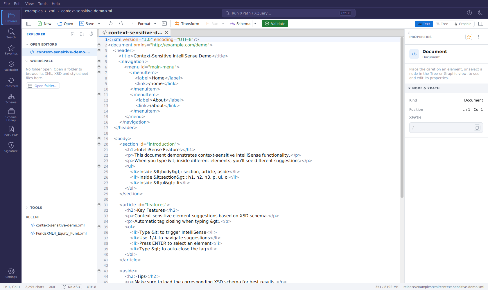
The Unified Shell: activity bar (left), Explorer side panel, editor host with an XML file (Text/Tree/Graphic view toggle), the Properties inspector (right) and the status bar.Layout¶
| Area | Purpose |
|---|---|
| Activity bar (far left) | Switch tools / side panels: Explorer, Search, Favorites, Validation, Transform, Schema, Schema Library (its label wraps onto two lines), PDF/FOP, Signature, Settings - plus a FundsXML activity when the optional FundsXML extension is enabled (see FundsXML Panel). Always visible - it cannot be collapsed. (Settings, Schema Library and Signature open as a full page in the editor area - see Settings Page, Schema Library Page and Signature Page. Help is not an activity - it is the Help menu, see Help Menu & About.) |
| Menu bar (very top) | File / Edit / View / Tools / Help - every action of the toolbar, the Activity Bar and the keyboard shortcuts in one place (see Menu Bar). On macOS it is the system menu bar at the top of the screen. |
| Header bar (top) | The breadcrumb (application / active file), a centered search pill ("Run XPath / XQuery…", shortcut Ctrl+K) that opens the bottom Query Console when clicked, the ? button (opens the Help menu as a popup - same as F1) and the Theme button. |
| Side panel | The panel for the selected activity (e.g. the Transform panel, the Validation panel). Resizable and collapsible (see Resizing and collapsing the side panels). |
| Editor host (center) | Tabs of open documents, each with the Text, Tree and Graphic view modes - plus a rendered Preview for HTML documents (see View Modes). |
| Inspector (right) | View and edit the selected node's properties from any view. Resizable and collapsible (see Resizing and collapsing the side panels). Hidden automatically while a page without a document (Settings, Schema Library, Signature, reports, tool tabs) is selected. |
| Status bar (bottom) | Caret position (Ln/Col), character count, file type, the XSD / IntelliSense indicator, the encoding label (UTF-8), the last recorded run (Developer feature), a memory indicator and the active file's path (see Status Bar). |
Resizing and collapsing the side panels¶
Both the left side panel and the right Properties inspector can be resized and collapsed to give the editor more room - the activity bar always stays visible.
Resizing - the panels are not fixed-width:
- Drag the thin divider line between a panel and the editor to make the panel wider or narrower (the mouse pointer turns into a horizontal resize arrow over the divider). Widen the panel when file names, validation messages, or property values get truncated.
- Each panel keeps a minimum width of 200 px, and the editor in the middle always keeps at least 320 px - you cannot drag a panel so far that the editor disappears.
- The chosen widths are remembered across restarts (per user).
- When you resize the window, the panels keep their pixel width - only the editor column grows or shrinks (the same behavior as VS Code).
Collapsing - each panel can also be hidden completely:
- Collapse: click the discreet collapse button at the panel's inner edge (a chevron
pointing at a bar:
|<on the left panel,>|on the inspector). The panel is hidden completely. - Re-open: click the matching toggle button in the editor toolbar (left-most toggle, a sidebar icon, for the side panel; right-most toggle, a mirrored sidebar icon, for the inspector) - the same mechanism on both sides. Selecting any activity from the activity bar also re-opens the left side panel. A re-opened panel comes back at its last dragged width.
- The collapsed/expanded state is remembered across restarts and can also be changed under Settings → Appearance → Layout ("Show left side panel" / "Show Properties (inspector) panel").
- The inspector only appears next to documents. When you switch to a tab that is not a document - Settings, Schema Library, Signature, a report or another tool tab - the inspector hides automatically, so the page gets the full width. Its toggle button is greyed out on such tabs. As soon as you select a document tab again, the inspector comes back. Your own show/hide choice is not changed by this - if you had hidden the inspector, it stays hidden.
Key Features¶
- Multi-tab editing - Open multiple files of different types in one view
- Automatic file type detection - Files are recognized by extension (.xml/.wsdl, .xsd, .xsl/.xslt, .xpl/.xproc, .xq/.xquery/.xqm/.xqy, .xpath, .sch/.schematron, .json/.jsonc/.json5, .html/.htm/.xhtml); anything else opens as plain text
- View modes per document - Text, Tree and Graphic, all over one shared model, plus a rendered Preview for HTML documents (see View Modes)
- Inspector editing everywhere - edit node properties from the Text, Tree and Graphic views, not just one
- Integrated XPath/XQuery - a bottom Query Console queries the active XML/JSON file right from the editor (Ctrl+Shift+X)
- Editor toolbar actions - run Validate, Transform, Run, Generate Documentation and the Type Editor for the active document without switching activities
- Search & Replace - Ctrl+F / Ctrl+H across the editor, in every view mode: the Text view searches the raw text, the Tree and Graphic views search the nodes themselves (names, documentation, attributes, enumeration and facet values, comments)
- Find in Files & XPath search - the Search activity (Ctrl+Shift+F) searches and replaces across all files of a folder, by plain text or by XPath expression (see Search Panel)
- Resizable side panels - drag the divider lines to give the side panel or the Properties inspector more room; the widths are remembered across restarts (see Resizing and collapsing the side panels)
- Favorites - Quick access to frequently used files
Colours: workflows and actions¶
Colour tells you two things at a glance, and the two never mix on one surface:
- Which workflow you are in. Every activity has its own accent colour: Explorer brand blue, Search indigo, Favorites amber, Validation green, Transform orange, Schema purple, Schema Library grape, PDF / FOP rose, Signature cyan, FundsXML teal. The colour appears only on the chrome that names the workflow: the bar next to the selected Activity-Bar icon, the panel title (VALIDATION, TRANSFORM, …), the panel's one primary button (Run Validation, Run Transform, Generate PDF, Validate Signature), the tint of the matching toolbar group, the icons of the Welcome page's task list and the "last run" badge in the status bar. Settings stays neutral, so the default view of the app looks as before.
- What an action does. Menu items and the action rows of the side panels colour their icon by the kind of action, in every editor and every view: green adds or creates (Add, Paste, Duplicate, Validate, Generate), red removes (Delete, Remove, Clear, Cut), orange edits in place (Rename, Edit value), cyan navigates to something that already exists (Go to Definition, Reveal, Find, opening a favorite or a generated PDF), purple changes structure (Change Type, Cardinality, Move Up/Down), blue runs a tool (Format, Sort, Save, Export, Download, "Open file…" with a file chooser) and grey is neutral (Copy, Expand/Collapse, Undo/Redo).
Result colours always win: a failed run shows a red icon on an orange Transform badge, a passed validation a green check. Both layers switch with the light/dark theme:
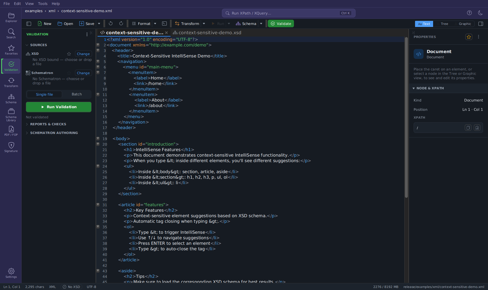
Getting Started¶
- The Unified Shell opens automatically on startup.
- Use the Explorer activity (or File → Open) to open files; File → New (Ctrl+N) opens the guided New File dialog to create a new file from a template or schema. You can also drag & drop files from your file manager anywhere onto the window - every supported file type (XML, XSD, XSLT, XProc, XQuery, XPath, Schematron, JSON, HTML) opens as a new tab; other files are ignored.
- Files open as tabs in the editor host - switch tabs by clicking their headers, and switch view modes (Text / Tree / Graphic - plus Preview for HTML files) with the segmented view switch.
After the first start, a small Anonymous usage statistics notice appears once in the bottom-right corner of the window. It explains that FreeXmlToolkit sends anonymous usage statistics and error reports (never file names, paths or content). Click OK to continue, Settings… to switch it off, or What is sent? to see the exact data. Nothing is sent before you have acknowledged this notice. See Privacy & Anonymous Telemetry.
New File Dialog¶
Creating a new file opens a guided dialog instead of silently opening an empty, untitled document. You can pick a starting template or an XSD schema, so a new file already has a sensible structure.
The New File dialog opens whenever you create a new document - from the toolbar New button (Ctrl+N), the Explorer panel's New file action, or the New File card on the Welcome screen. It walks you through a few simple choices and then opens (and optionally saves) the new document.
| Field | What it does |
|---|---|
| File type | Choose XML, XSD, XSLT, Schematron, JSON, XProc, XQuery, XPath, or HTML. The rest of the dialog adapts to your choice. |
| Template | A list of available templates - the built-in library plus your own templates from Settings - automatically filtered to the selected file type. The default is "— None —" (start blank). Picking a parameterized template prompts you for its values when the file is created. |
| Schema | (plain XML only, and only when no template is chosen.) Pick an XSD to base the document on - from your Favorites, your Recent files, or Browse… to select a file. The chosen schema is also bound to the new document, so it appears in the Validation panel and drives IntelliSense. |
| Pre-fill mandatory nodes (empty) | (shown with the Schema option, on by default.) When a schema is selected, the new document is pre-populated with all required elements and attributes (left empty) generated from that schema, giving you a ready-to-fill skeleton. |
| Save to | (optional.) Choose a location with Browse… to write the file to disk immediately and open it. Leave it empty to open the document as an untitled tab - you will be asked for a location the first time you Save. |
What you get¶
- A template is rendered into the new document (prompting for any parameters first).
- XML with a schema and "Pre-fill mandatory nodes" produces a skeleton containing every mandatory element and attribute from that schema.
- Otherwise you get a minimal, valid starting point for the chosen type: an XML declaration
for XML, an
xs:schemaskeleton for XSD, anxsl:stylesheet(version 3.0) skeleton for XSLT, an ISO-Schematron skeleton for Schematron,{}for JSON, ap:declare-stepskeleton (withsource/resultports andp:identity) for XProc, anxquery version "3.1";prolog for XQuery, and a minimal HTML5 page skeleton for HTML.
View Modes¶
The segmented view switch offers the Text, Tree, and Graphic view modes - each with its own icon - plus, for HTML documents only, a rendered read-only Preview (eye icon) - the Preview segment only appears while an HTML document is active. There is no separate Grid mode - the grid is part of Graphic.
Every document tab offers the same view modes:
| Mode | What it shows |
|---|---|
| Text | Source code editing with syntax highlighting |
| Tree | The document as a hierarchical tree |
| Graphic | A visual editor that depends on the document type: for XML, XSLT, Schematron and JSON files it shows the editable XMLSpy-style grid; for XSD files it shows the schema diagram |
| Preview | (HTML documents only.) The page rendered read-only in an embedded web view - see HTML Preview |
All views share one in-memory model per document, so edits and Undo/Redo history are preserved when you switch views.
The Grid (Graphic view for XML)¶
When an XML-instance document (XML, XSLT, or Schematron) is in the Graphic view, the editor shows the editable grid:
- A header strip at the top reads "Grid view · nested · repeating elements as embedded
grids" and offers the zoom pill (
− 100% +), Expand all and Collapse all buttons that unfold or fold every container at once. - Nothing is cut off. Cells and rows take the width their content needs; long values wrap onto further lines (the row grows) instead of being shortened with "…". Very wide content is reached with the horizontal scrollbar (Shift+wheel).
- Zoom the whole grid - text, rows, icons and embedded tables - with Ctrl+mouse wheel,
Ctrl + / Ctrl − (10 % steps, 50-300 %) or the
−/+buttons; Ctrl 0 or a click on the percentage resets to 100 %. The zoom factor is remembered across files, XML and JSON grids and restarts. - Column widths in embedded grids size themselves to their content; drag a column separator in the column-header row to resize a column (text re-wraps to the new width), and double-click the separator to return to automatic sizing. Dragged widths survive edits and undo.
- Rows with a simple value are marked with a
{}marker so you can tell value rows from containers at a glance. - Attributes always show as
@namerows directly beneath their element - also while the element itself is collapsed. - Collapsed containers show a "collapsed" hint, so you always know there is hidden content.
- Repeating elements are rendered as embedded grids (tables inside the row).
- Keyboard navigation works as soon as the view opens (no click needed): ↑/↓ walk the rows, → expands a collapsed element, ← collapses it (or jumps to the parent), Enter toggles a container / starts editing a value, Home/End jump to the first/last row, F2 renames, and the usual Ctrl+C/X/V, Ctrl+D (duplicate) and Delete act on the selected node.
- Copy XPath / Copy Node: the grid's context menu offers Copy XPath (Ctrl+Alt+X), Copy Cell Content (Ctrl+Shift+C) and Copy Node (XML) (Ctrl+Alt+C); all three shortcuts also work directly on the selected node. Ctrl+Shift+X toggles the Query Console everywhere, including while the grid has focus.
The Grid (Graphic view for JSON)¶
JSON documents (.json, .jsonc, .json5) get the same grid in the Graphic view -
same header strip, same rows, same keyboard shortcuts and context menu - so a JSON file
looks and feels exactly like an XML file in the grid:
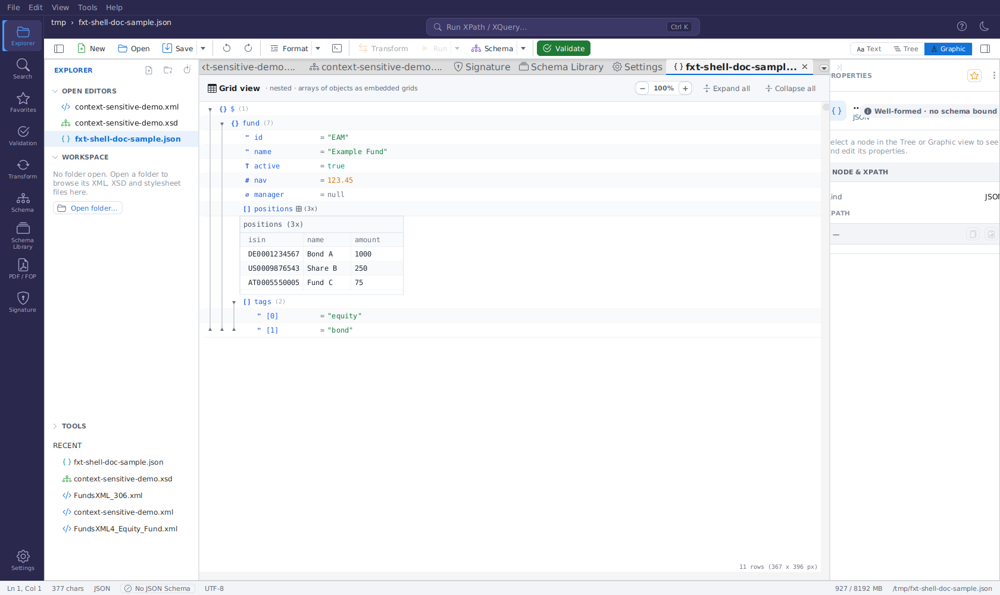
- The root value is the
$row; object properties and array items ([0],[1], …) are the rows beneath it. Objects and arrays are collapsible containers showing their child count; scalar properties show askey = valuerows. - Every row carries a type glyph in its own colour:
{}object,[]array,"string,#number,T/Fboolean and∅null. Strings are shown quoted (= "Alice") - like XML leaf values - so"42"and42are never confused. - Arrays of objects are rendered as embedded grids (a table with one column per key, merged across all items), exactly like repeating elements in XML. Column headers sort the array (numbers, dates and strings are recognised), nested objects expand inline.
- Inline editing keeps the value's type: double-click a number and type a number
(anything else is rejected with a hint and the editor stays open), booleans toggle between
true/false,nullstaysnullunless you type text. Double-click a key to rename it (duplicate keys are refused). - The context menu mirrors the XML one: Add (Property / Array Item / Sibling Before /
After), Rename Key (F2), Duplicate (Ctrl+D), Copy / Cut / Paste as Sibling /
Paste as Child, Copy Cell Content, Copy JSONPath (Ctrl+Alt+X - e.g.
$.items[1].name), Copy Node (JSON) (Ctrl+Alt+C), Change Type (String / Number / Boolean / Null / Object / Array), Move Up / Down (Alt+↑/↓), Expand All / Collapse All, Sort Column and Delete. Copy Cell Content is Ctrl+Shift+C, as in the XML grid. - All edits go through the document's undo history (Ctrl+Z / Ctrl+Y) and are written back into the text - the Text, Tree and Graphic views share one model, and the Properties inspector edits keys and values from any of them.
- Zoom, wrapping and column widths behave exactly as in the XML grid: the header's zoom pill and Ctrl+mouse wheel / Ctrl + / Ctrl − / Ctrl 0 zoom the whole grid (the factor is shared with the XML grid), long strings wrap instead of being cut off, and the columns of an embedded array table can be dragged to a new width (double-click the separator to auto-fit). Expand all / Collapse all sit in the header strip as well.
Comments and JSON5 syntax are not preserved
The grid edits the parsed model. Comments (JSONC) and JSON5 syntax (unquoted keys, single quotes, trailing commas) are not part of it, so the first grid edit rewrites the file as standard JSON. The grid shows a warning the first time it opens such a file; if you need to keep the comments, edit in the Text view instead.
HTML Preview (Preview view for HTML)¶
HTML documents (.html, .htm, .xhtml) get their own Preview view mode - the eye
icon in the segmented view switch - that renders the page read-only, the way a browser
would show it:
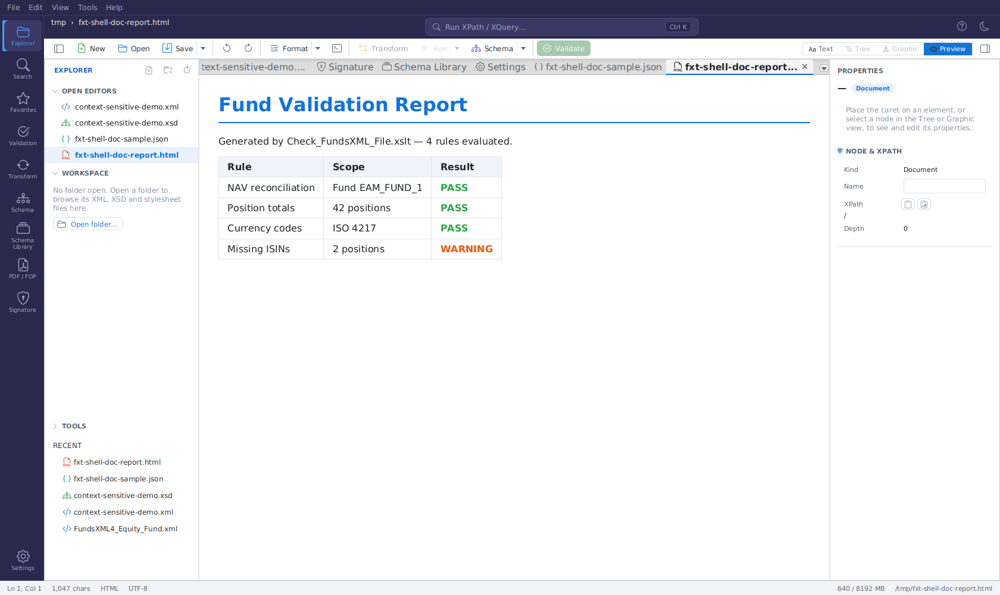
- HTML files open in Preview by default. Whether you open them from the Explorer, by drag & drop, or via the Open dialog, you see the rendered page first.
- Editing happens in the Text view. Switch to Text to change the markup, then switch back to Preview - it re-renders your current editor text, including unsaved changes.
- Tree and Graphic are disabled for HTML documents, because HTML output is often not well-formed XML.
- Transform results render here too. The OUTPUT panel's Open result as editor tab opens an HTML/XHTML transform result as an HTML document showing its Preview, and re-running the transform updates the open result tab live - see The OUTPUT Panel.
Preview limitations
- The page is rendered without a base URL, so relative references - external CSS files, images - do not resolve. Inline styles render fine. To view a transform result together with its external assets, use the OUTPUT panel's Open in browser action instead.
- Ctrl+F in the Preview searches the document's underlying markup text, not the rendered page.
- The Preview is read-only - all editing happens in the Text view.
Files Changed Outside the Editor¶
The shell watches the files of all open tabs. When another program changes or deletes one of them, a dialog asks what to do - checked every two seconds while the FreeXmlToolkit window is active, and immediately when you switch back to it.
| Situation | Choice | Result |
|---|---|---|
| File changed on disk | Reload | The tab shows the file's new content. Unsaved changes in that tab are discarded (the dialog warns you when there are any). Caret position and view mode (Text / Tree / Graphic) are kept. |
| Ignore | The tab keeps its content and is marked as unsaved (●), because it now differs from the file. Saving overwrites the external change. You are not asked again until the file changes once more. | |
| File deleted on disk | Keep | The tab stays open and is marked as unsaved (●). Save creates the file again. |
| Close | The tab is closed, including any unsaved changes. |
Closing the dialog with Esc counts as Ignore / Keep. With several affected files the dialogs appear one after the other, each with its tab brought to the front.
Note
- Saving from the editor itself never triggers the dialog, and neither does a file that was merely touched or rewritten with identical content.
- Changing a tab's file from elsewhere in the application - for example saving the right side of a diff, or exporting a result over a file that is open - is reported like any other outside change.
- Untitled documents are not watched.
Supported File Types¶
| Type | Extensions | Features |
|---|---|---|
| XML | .xml, .wsdl | Text + graphic view, XSD/Schematron linking, IntelliSense, continuous validation |
| XSD | .xsd | Text + graphic view, Type Library, Type Editor, Schema Analysis, Documentation, Sample Data, Flatten |
| XSLT | .xsl, .xslt | XSLT editor + XML input + output preview, live transform, parameters, performance metrics |
| XProc | .xpl, .xproc | Pipeline editor (Text + Tree view), Run Pipeline via the embedded XML Calabash engine - see XProc Pipelines |
| XQuery | .xq, .xquery, .xqm, .xqy | Query editor with highlighting + IntelliSense, Run Query against a selectable target - see Query Documents |
| XPath | .xpath | Single-expression query editor, Run Query against a selectable target - see Query Documents |
| Schematron | .sch, .schematron | Code editor + Visual Builder + Tester + Documentation Generator |
| JSON | .json, .jsonc, .json5 | Text + tree + editable grid view (see The Grid for JSON), JSONPath queries, JSON Schema validation. The JSON/JSONC/JSON5 flavor is detected from the content, so comments and trailing commas are accepted in any of the three. |
| HTML | .html, .htm, .xhtml | Rendered read-only Preview (the default view) + Text editing; also the format of HTML/XHTML transform results opened as editor tabs - see HTML Preview |
Menu Bar¶
The menu bar offers every shell action by name, with its keyboard shortcut next to it. Items that do not apply to the active document are greyed out (e.g. Type Editor is only available for XSD schemas, Save needs an open document).
| Menu | Contents |
|---|---|
| File | New…, Open…, Open from URL…, Open Recent (the last opened files), Close Tab, Save, Save As…, Save All, Settings…, Exit (Ctrl+Q; asks to save unsaved changes first) |
| Edit | Undo, Redo, Find…, Replace…, Find in Files…, Replace in Files…, Format Document, Minify, Insert Template… |
| View | The view modes (Text / Tree / Graphic / Preview), Side Panel, Properties Inspector, Query Console, Favorites Panel, Activities (jump to any activity), Toggle Light / Dark Theme, Full Screen |
| Tools | Validate, Run, Transform with XSLT…, Debug with XSLT… (Shift+F5), Toggle Breakpoint (F9), Set Schema…, Generate Documentation…, Type Editor, Compare with File…, Spreadsheet Converter…, Add to Favorites |
| Help | Documentation, Keyboard Shortcuts, FundsXML Website and FundsXML Schema Docs (only while the FundsXML extension is enabled), Report a Problem… (when error reporting is enabled), GitHub Repository, Sponsor this Project, Check for Updates…, About FreeXmlToolkit - see Help Menu & About |
macOS¶
On macOS the menus appear in the system menu bar and follow the platform conventions:
- The FreeXmlToolkit application menu holds About FreeXmlToolkit, Check for Updates…, Settings… (Cmd+,), Hide FreeXmlToolkit (Cmd+H), Hide Others, Show All and Quit FreeXmlToolkit (Cmd+Q). These items are therefore not repeated in File and Help.
- A Window menu offers Minimize, Zoom and Bring All to Front.
- All shortcuts use Cmd instead of Ctrl. Because Cmd+H hides the application, Find and Replace is Alt+Cmd+F on macOS; full screen is Ctrl+Cmd+F (F11 works too).
Toolbar¶
The editor toolbar is a single slim row. Related actions sit in split buttons with a visible ▾ arrow menu: Save As / Save All live under Save ▾, Minify under Format ▾, Run Query / Run Transform / Run Pipeline under Run ▾, and Set XSD Schema… / Generate Documentation… / Type Editor… under Schema ▾.
The toolbar shows only what you can use right now. Without a document - on the Welcome page, or while a page such as Settings, Signature or Schema Library is in front - it shows just New and Open; the document groups (Save, Undo/Redo, Format, Query Console, Transform, Run, Schema, Validate) and the Text / Tree / Graphic view switch are hidden rather than shown greyed out. They come back as soon as a document tab is active.
There is no hidden "overflow" menu. Less frequent tools - Insert Template… (Ctrl+T), Compare with File… and Spreadsheet Converter… (Ctrl+E) - are in the Menu Bar (Edit and Tools menus) instead of the toolbar; their shortcuts work as before. Only when the window gets very narrow does the row wrap onto a second line as a fallback. The toolbar groups its actions three ways:
Labeled buttons (frequent actions)¶
- New (Ctrl+N) - Open the guided New File dialog to create an XML, XSD, XSLT, Schematron, JSON, XProc, XQuery, XPath, or HTML file from a template or schema
- Open (Ctrl+O) - Open one or more files
- Validate (F8) - Validate the active document; this is the toolbar's primary action and the only filled button in the row - it is filled in the green of the Validation workflow (see Colours: workflows and actions). XML validates against the bound XSD/Schematron if one is set, otherwise for well-formedness.
Split buttons (click the ▾ arrow for related actions)¶
Clicking the button itself runs the main action; clicking the small ▾ arrow opens a menu with the closely related actions:
| Split button | Primary click | Arrow (▾) menu |
|---|---|---|
| Save | Save the current tab (Ctrl+S) | Save As… (Ctrl+Shift+S) - save under a new name (the file chooser is pre-set to the tab's file type) · Save All - save every open tab at once |
| Format | Pretty-print the active document (Shift+Alt+F; note: Ctrl+Shift+F opens the Search panel, not document search). XML is indented by two spaces per level and every start tag stays on one line, however many attributes it carries | Minify - remove all insignificant whitespace |
| Run | Run the active document against the selected Input (Ctrl+Enter) - the primary click automatically runs whichever action the active file type supports | Run Query (XPath/XQuery) · Run Transform (XSLT) · Debug Transform (XSLT, Shift+F5 - the active stylesheet in the debugger) · Run Pipeline (XProc) |
| Transform | Transform with XSLT… - opens the Transform panel on the active XML document, asks for a stylesheet if none is set, and runs it there (result in the OUTPUT panel) | Transform with XSLT… · Debug with XSLT… (Shift+F5) - the same, but in the debugger |
| Schema | Set XSD Schema… - bind an XSD to the active document for IntelliSense and validation | Set XSD Schema… · Generate Documentation… (HTML/PDF/Word for the active XSD) · Type Editor… (edit a named type of the active XSD) · Generate XSD from XML (infer a schema from the active XML document) · Generate XSD from XML Files… (infer one schema from several XML files) |
- Transform is a split button, see above: the primary click transforms, the ▾ arrow offers Debug with XSLT…
Icon-only buttons (hover for the tooltip)¶
- Undo (Ctrl+Z) / Redo (Ctrl+Y)
- Query Console - Shows / hides the bottom XPath/XQuery console (terminal icon). Ctrl+Shift+X shows or hides it; Ctrl+K (and the header's Run XPath / XQuery… pill) opens it and puts the cursor in the query.
Type-gating and the Input dropdown¶
The document actions act on the active document and are enabled only when they apply to its type (greyed out otherwise) - this covers Validate, Transform with XSLT…, the Run button and its menu entries (and Tools → Run / F5), and the Schema menu's Generate Documentation… / Type Editor… / Generate Sample XML… (also in Tools). The Input dropdown (labelled "Input: …", formerly Target) appears next to Run only while a query, XSLT, or XProc document is active and selects the XML document the run works on. See Editor Toolbar Document Actions and Query Documents & the Input Selector below.
Panel Toggles¶
- Side panel (Ctrl+L) - Show/hide the left side panel (the active activity's Explorer,
Validation, Transform, Schema, … panel); the same as the collapse button (
|<) at the panel's inner edge - Query Console (Ctrl+Shift+X) - Show/hide the bottom XPath/XQuery query console (terminal icon in the editor toolbar). See Query Console below.
- Properties (Ctrl+Shift+P) - Show/hide properties and validation sidebar. For XML files, the properties inspector lets you view and edit a node's properties (element name, namespace, attributes, and text content) from all three views - Text, Tree, and Graphic (the grid). For XSD files, the same inspector lets you edit a schema node's properties from all three XSD views - Text, Tree, and Graphic. See Properties Inspector below.
- Favorites (Ctrl+Shift+D) - Show/hide the favorites panel (Ctrl+D adds the active document to favorites)
XSD Views & Tools¶
When editing an XSD file, the editor host and the Schema activity provide:
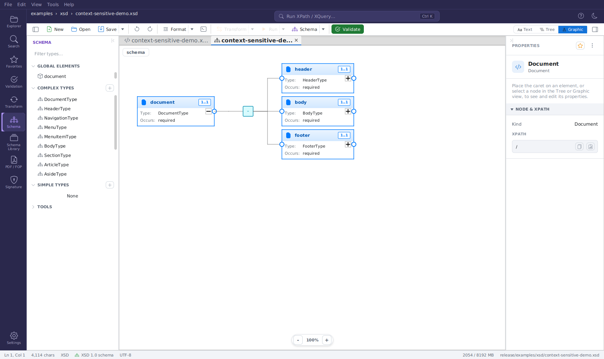
An XSD open in the Graphic view, with the Schema activity panel (Type Library, Flatten, Schema Analysis, Generate Sample XML / Documentation) on the left.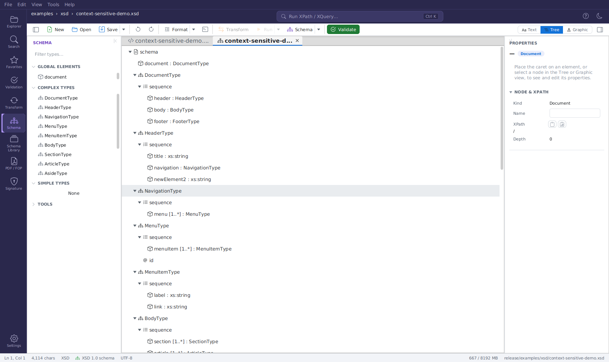
The same schema in the Tree view - select a node to edit its properties in the inspector.- Text - Source code editing with syntax highlighting; moving the caret into a schema construct also lets you edit its properties in the Properties pane (see Properties Inspector)
- Graphic - Visual XMLSpy-style schema diagram
- Type Editor - Edit ComplexTypes graphically, SimpleTypes with form editor
- Analysis - The Schema Analysis tool tab: statistics incl. complexity metrics, unused types / groups and circular references, a Types tab with usage locations and "Remove unused", quality checks with score, identity constraints, XPath validation - every finding reveals its node in the Tree view, and the whole report exports as CSV / JSON / HTML / PDF / Excel (see Schema Analysis)
- Documentation - Generate HTML/Word/PDF documentation (see below)
- Sample Data - Generate sample XML from the schema
- Flatten - Merge included schemas into a single standalone file. The Flatten Schema… button opens an options dialog first: strip annotations, strip XML comments, remove unused global types and groups, and minify the output — all checked by default for a minimal schema suited to server-side validation; uncheck everything for a plain flatten that keeps documentation. Imports (
xs:import, different namespaces) are never merged. See XSD Flattener for details.
Missing imported schemas resolve automatically
If a schema's xs:import points to a file that is not found next to the schema, the
toolkit looks it up in the Schema Library and your XML catalogs, then in the schema
cache, and finally downloads it from the declared or namespace URL into the cache -
so the imported types still appear in the Tree and Graphic views, even offline on
later loads. Nested imports inside imported schemas are followed too, and your own
schema files are never modified. See
Automatic Resolution of Imported Schemas.
The Schema Panel¶
The Schema activity's side panel lists the active schema's top-level declarations, grouped into GLOBAL ELEMENTS, COMPLEX TYPES, and SIMPLE TYPES (collapsible sections), with a filter field on top. Click a declaration to reveal it in the Tree view; double-click a type to open it in its dedicated Type Editor tab; right-click for Reveal in Tree / Open Type Editor / Find Usage. The schema tools (Generate Sample XML…, Sample XML with Options…, Flatten Schema…, Schema Analysis, Generate Documentation…) are labelled rows in the TOOLS section below the type lists - each row shows an icon and the tool's name, so nothing hides behind a tooltip. TOOLS starts collapsed; click its header to expand it.
Generate XSD from XML (infer a schema from the active XML document) and Generate XSD from XML Files… (infer one schema from several XML files) are not in the Schema panel - they are in the editor toolbar's Schema ▾ split menu.
The whole panel is a drop zone: drop an .xsd file from your
file manager anywhere on it to open that schema as a document - the panel then shows
its declarations. Unlike the picker drop targets elsewhere in the shell, this drop
opens the file rather than binding or selecting anything. While dragging, the panel
shows a dashed green border with a soft tint for an .xsd file and a dashed red
border for any other extension - a red drop is rejected and does not open the file.
Documentation Generator (editor area)¶
Generate Documentation… (Schema panel TOOLS section or the editor toolbar's Schema ▾ menu) opens the generator as a tab in the main editor area with the full option set:
- SOURCE & OUTPUT - the XSD (the active schema is pre-filled) and the output folder (HTML) or file (PDF/Word).
- FORMAT - HTML, PDF, or Word.
- OPTIONS - Markdown rendering (All documentation, Per node (
@markdown), or Off), type definitions in source code, documentation in diagrams, SVG overview page, metadata, the diagram image format (SVG/PNG/JPG), and a favicon (.ico/.png/.svg) embedded into the generated HTML site. See Generation Options for what the Markdown settings do. - PDF/WORD OPTIONS (shown for those formats) - page size (A4/Letter/Legal, PDF also A3), orientation, and the content building blocks (cover page, table of contents, data dictionary, schema/element diagrams). PDF additionally offers the color scheme (Blue/Green/Purple/Grayscale/Professional), a watermark (Draft/Confidential/Internal Use Only), page numbers, and PDF bookmarks.
- LANGUAGES - Scan languages discovers the
xml:langdocumentation languages in the schema; pick which to include and the fallback language. - PROGRESS - the right-hand log streams the pipeline's task messages live while generating; the run can be cancelled, and the result can open automatically.
Query Documents & the Input Selector¶
XPath and XQuery files are first-class editor documents: open a
.xqor.xpathfile (or any file fromexamples/xpath/andexamples/xquery/), press Run Query, and read the result in the OUTPUT panel - no console or panel switching required.
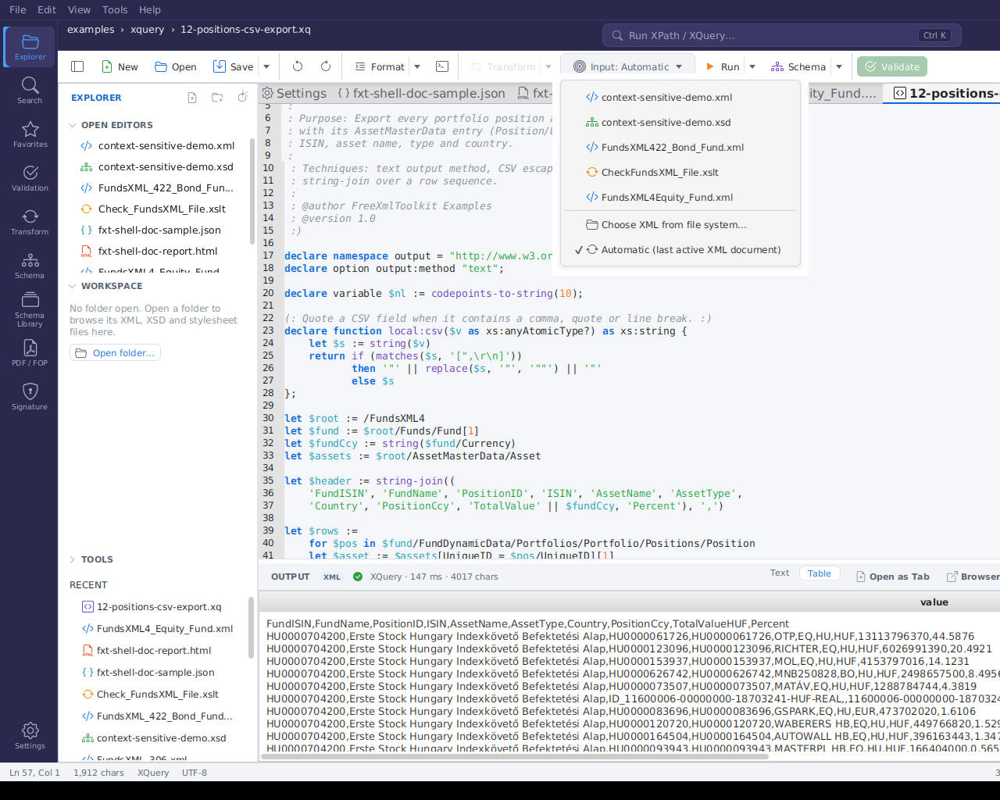
An XQuery document fromexamples/xquery/ with the Input dropdown open: pick an
open XML-family document, a file from disk, or Automatic (the most recently active XML
document, here checked). Below, the OUTPUT panel shows the query's CSV result.
Query documents¶
.xq, .xquery, .xqm, .xqy (XQuery) and .xpath (XPath) files open in a dedicated
query editor with XPath/XQuery syntax highlighting and the same context-aware
autocomplete as the Query Console. They appear in the
Explorer workspace tree, the file choosers and drag & drop like every other supported
type.
Running¶
- Run Query (the toolbar's Run button, or
Ctrl+Enter) runs the active XPath/XQuery document. The Run ▾ arrow menu lists all three run actions explicitly. - Run Transform does the same for an active XSLT stylesheet - output format
auto-detected from its
xsl:outputdeclaration. - Run Pipeline covers XProc documents (see XProc Pipelines).
Results appear in the OUTPUT panel docked below the editor, with execution time and result size in the status line. A tabular XQuery result (a sequence of similar elements) additionally offers a Table view; HTML results get a preview, and everything can be opened as an editor tab, opened in the browser, or saved from the panel's header buttons.
The Input dropdown¶
The query, stylesheet or pipeline runs against an XML input document. The Input dropdown in the editor toolbar (its label reads "Input: …" followed by the chosen document) (shown only for query/XSLT/XProc documents) controls which one:
- Automatic (last active XML document) - the default: the most recently active XML-family document (XML, XSD, XSLT, Schematron, XProc). The active document itself is never chosen - an XSLT stylesheet does not transform itself.
- An open document - pick any other open XML-family tab. The run uses the tab's live editor text, including unsaved changes.
- Choose XML from file system… - pick a file without opening it; it is read fresh on every run.
The choice is remembered per document for the session. If a chosen target tab is closed, the run falls back to Automatic. With no XML-family document available at all, Run Query/Run Transform show a short guard message instead of failing.
Tip
Ready-made queries ship in examples/xpath/ (32 expressions) and examples/xquery/
(17 scripts) - open any of them and press Ctrl+Enter against a FundsXML sample from
examples/xml/. See Bundled Example Collections.
XSLT Features¶
XSLT work happens in the Transform Panel (Activity Bar → Transform):
- Run Transform - Run an XSLT transformation against the chosen input
- Live preview (OPTIONS & TOOLS section) - Re-run automatically while you edit
- Parameters - Define XSLT parameters (name = value rows)
- Output method - Auto-detect or choose XML, HTML, XHTML, Text, or JSON output
- Timing - The OUTPUT panel status shows execution time and output size
- Debug (next to Run Transform, also Tools → Debug with XSLT… / Shift+F5) - the
interactive debugger: breakpoints, stepping, variables, call stack, watches and live
xsl:messageoutput in a DEBUG dock below the stylesheet - see Debugging a Stylesheet - Profile / Trace (OPTIONS & TOOLS section) - Per-template timings and the
template-match trace with
xsl:messageoutput of a normal run - Open in browser - View HTML output in your default browser from the OUTPUT panel
XProc Pipelines¶
XProc 3.0 pipelines (.xpl, .xproc) are first-class editor
documents, executed with the embedded XML Calabash 3 engine:
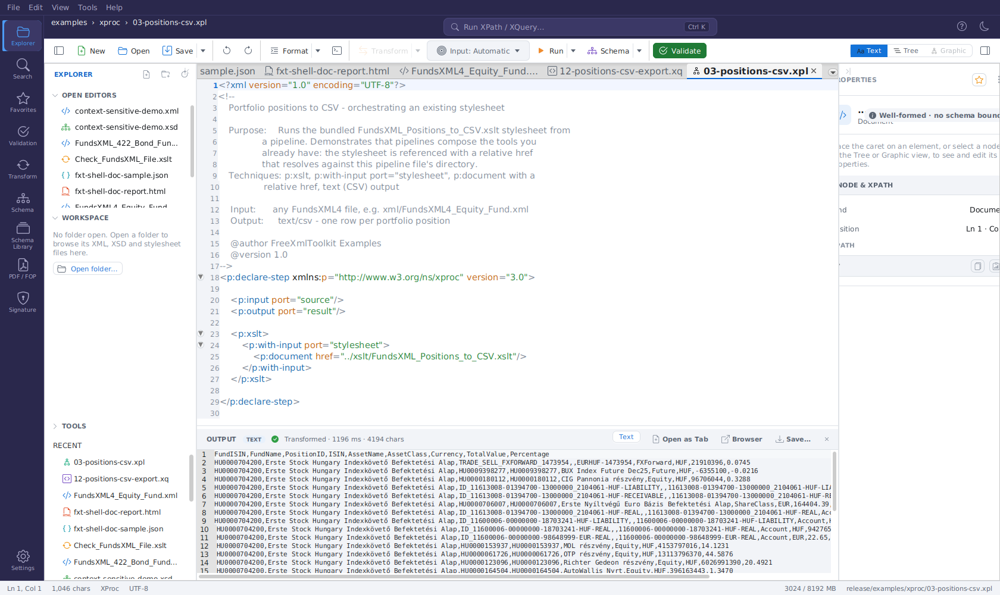
The bundled03-positions-csv.xpl example after Run Pipeline: the pipeline runs
the CSV export stylesheet (referenced with a relative href) against the Automatic
target and streams the result into the OUTPUT panel.
- Run Pipeline (the toolbar's Run button or its ▾ menu, or
Ctrl+Enter) runs the active pipeline. The primary input (sourceport) is the document chosen in the Input dropdown — by default the most recently active XML document, exactly like Run Query and Run Transform. - Relative
hrefs in the pipeline (p:document,p:xsltstylesheets, Schematron schemas) resolve against the pipeline file's directory. - Results appear in the OUTPUT panel; XML, HTML, text/CSV and JSON outputs are routed to the matching view automatically.
- Self-contained pipelines (no input ports, or ports with default bindings) run without a target.
- File → New offers an XProc skeleton (
p:declare-stepwithsource/resultports andp:identity). - Ready-to-run examples ship in
examples/xproc/— see Bundled Example Collections.
Saxon-HE limitations
p:validate-with-xml-schema and p:xsl-formatter require Saxon-EE and are not
available; use the Validation activity (Xerces, full XSD 1.1) and the PDF/FOP
activity instead. p:validate-with-json-schema is not supported in this bundle.
Transform Panel¶
The panel is organized into collapsible sections (STYLESHEET, INPUT, OUTPUT METHOD, PARAMETERS) with a single primary Run Transform button and a Run automatically checkbox next to it. Results do not open as an editor tab - they appear in the OUTPUT panel docked below the editor. The run options (checkboxes) and the advanced tools share the collapsed OPTIONS & TOOLS section below the run button.
The Transform panel (open it from the Transform icon in the activity bar on the left) runs XSLT transformations. XPath, XQuery and JSONPath queries against the open document live in the Query Console - the panel shows a short hint with an Open Query Console button for them. The panel header reads TRANSFORM; the run options and tools are in the OPTIONS & TOOLS section (see OPTIONS & TOOLS below). Each section header is clickable to collapse or expand that section.
Tip
For a quick transform without opening this panel, right-click XML files in the Explorer and choose Transform with …. It shares the same recent-stylesheet list and shows its result in the same OUTPUT panel.
STYLESHEET¶
- Shows the name of the chosen XSLT stylesheet on its own line below the icon, the favorites/browse controls and Change (long names are shortened in the middle; hover for the full path). While no stylesheet is set, the row reads "No stylesheet — choose or drop a file" - clicking it works like Change.
- Change - pick an
.xsl/.xsltfile from disk. - The clock icon opens the recent stylesheets menu: reapply a recently used stylesheet in a single click, or choose Clear recent to empty the list.
- The star icon opens your XSLT favorites - see Browsing favorites with ◀ / ▶ below. A picked stylesheet is also loaded into the editor.
- Drag & drop: drop an
.xsl/.xsltfile from your file manager straight onto the STYLESHEET row - it becomes the current stylesheet and is loaded into the editor, exactly as if you had picked it from a favorite. While dragging, the row glows green when the file can be loaded and red when it has the wrong extension (a red drop is rejected). As with favorites, the transform runs automatically as soon as both a stylesheet and an input are ready (while Run automatically is checked).
INPUT¶
The INPUT section shows which document the transform will use as its input (the name on its own line, the full path as tooltip; "No input — open a document or drop a file" while there is none):
- By default the input follows the active editor document: switch to another tab and the next run transforms that document (the shown input name updates live).
- Change opens a small menu with two options:
- Select XML file… - transform a fixed XML file from disk instead, regardless of which editor tab is active.
- Use active editor - go back to following the active tab.
- The star icon opens your XML favorites - see Browsing favorites with ◀ / ▶ below. A picked input is also opened in the editor and becomes the active tab.
- Drag & drop: drop an
.xmlfile from your file manager straight onto the INPUT row to transform that file - exactly like picking a favorite: it becomes the input and opens as the active editor tab. The same green (loadable) / red (rejected) drag-over feedback applies, and the transform runs automatically as soon as both a stylesheet and an input are ready (while Run automatically is checked).
Browsing favorites with ◀ / ▶¶
Pick stylesheets and input files straight from your Favorites and page through them, so you can run the same stylesheet over many files, or many stylesheets over one file, without ever opening a file chooser.
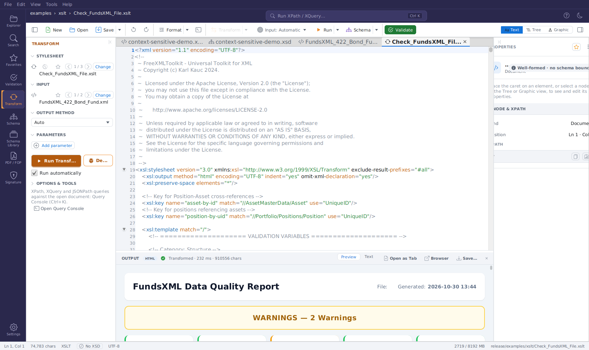
Both the STYLESHEET and the INPUT rows carry a star icon, a pair of ◀ / ▶ navigation buttons, and a small "i / n" position label. The ◀ / ▶ buttons and the label only appear once the browse list holds at least two entries.
- The star menu lists the favorites of the matching type - XSLT favorites for STYLESHEET, XML favorites for INPUT - grouped by their folder (category). An "All … favorites" entry at the top selects the whole list at once.
- Picking a favorite (or an "All"/folder entry) does three things: it sets the current file, it builds a browse list from that selection, and it loads the file into the editor. An input comes to the front as the active tab. A stylesheet opens behind the active tab while the input follows the active document (otherwise the stylesheet would become its own input); with a fixed input file it comes to the front too. The same happens on every ◀ / ▶ step.
- The ◀ / ▶ buttons then step backward and forward through that browse list. Browsing is cyclic: pressing ▶ on the last entry wraps to the first, and ◀ on the first wraps to the last. The "i / n" label shows your position (for example, 3 / 12).
- Each ◀ / ▶ step runs the transformation automatically (while Run automatically is checked) - but only once both sides are ready: a stylesheet is selected and an input is available (either a chosen input file or the active editor document). Until both are present, stepping just loads the file without transforming.
This supports two common workflows:
- Fix the input, step through stylesheets. Keep one XML file as input, then page through several data-quality or reporting stylesheets with ▶ to see each result in turn.
- Fix the stylesheet, step through inputs. Choose one XSLT stylesheet, then page through many XML input files with ▶ to apply the same transformation to each.
The existing Change file chooser, the clock (recent stylesheets) menu, and Use active editor all keep working exactly as before.
OUTPUT METHOD¶
A single dropdown with Auto, XML, HTML, XHTML, Text, JSON. Auto (the
default) detects the output format from the stylesheet's xsl:output declaration; pick a
concrete format to override the detection.
PARAMETERS¶
Define XSLT parameters as name = value rows:
- Add parameter adds a new row.
- Each row has its own remove button.
- The values are passed to the stylesheet on every run.
Running a Transformation¶
- Choose a stylesheet (STYLESHEET → Change, or pick one from the recent menu).
- Check the INPUT section shows the document you want to transform.
- Click Run Transform.
The Run automatically checkbox next to Run Transform (on by default) controls the automatic run that starts when you drop a stylesheet or input, pick one from your favorites, or browse with ◀ / ▶. Uncheck it to only set the file and run with Run Transform yourself.
The result appears in the OUTPUT panel below the editor - see The OUTPUT Panel below.
Debugging a Stylesheet¶
Debug (next to Run Transform) runs the same stylesheet over the same input as Run Transform (the INPUT file when one is set by dropping, a favorite or ◀ / ▶ browsing, otherwise the active document) in the interactive XSLT debugger. The other ways in are Tools → Debug with XSLT…, the Transform ▾ → Debug with XSLT… toolbar entry, Run ▾ → Debug Transform for an active XSLT document (against the toolbar's Input target), the PDF / FOP panel's Debug stylesheet…, and Shift+F5 whenever a document is open.
What happens:
- The stylesheet opens as a document (its saved file - the debugger reads it from disk so
relative
xsl:include/xsl:importhrefs resolve). Every saved XSLT document already has a breakpoint gutter: click the slot left of a line to toggle a red breakpoint, before or during a session (the click does not move the caret). Breakpoints are remembered per file across sessions and restarts, including those set in included modules. - The DEBUG dock opens below the editor, so the stylesheet stays visible while you step. The dock shares its space with OUTPUT; a small OUTPUT | DEBUG strip switches between them, and a result that arrives while DEBUG is in front marks the OUTPUT toggle.
- The run starts and pauses at the first instruction when there are no breakpoints (Pause on entry, a toggle in the dock's header), otherwise at the first breakpoint. The paused line is tinted in the editor and marked with a green arrow in the gutter (a yellow arrow on a breakpoint line). When Saxon pauses inside an included module, that file opens, with its own breakpoints in its gutter.
The dock's header holds the controls - Continue (F5), Step Into (F7), Step Over (F8), Step Out (Shift+F8), Restart (runs again from the start with the same breakpoints, re-reading the stylesheet), Stop, Pause on entry, Show in editor and ✕ (ends the session). Below it, two tab groups show the paused state - Variables | Watch on the left, Call Stack | Messages | Breakpoints on the right, with a draggable divider whose position is remembered. Messages and Breakpoints carry a count badge; a failed run brings Messages to the front. The five panels:
| Panel | Shows |
|---|---|
| Variables | The context item (.), position() / last(), every local variable in scope and every global variable that has been evaluated so far - with real values and XDM types. Click a value to open it in a window with the full, highlighted value, Copy, and an XPath field that runs against it (details) |
| Watch | Your XPath expressions, evaluated against the paused context item with the variables in scope (count(item), $total, position()); re-evaluated at every pause. Add / Remove sit above the table; Delete removes the selected expression; click a value to open the full result |
| Call Stack | Template and function frames (instructions nested inside them are dimmed), each with its module and line; double-click jumps there, also into an include |
| Messages | xsl:message output and Saxon warnings as they happen, with their stylesheet location; double-click jumps to the line |
| Breakpoints | All breakpoints of the session (file · line) with Remove / Clear all above the list (Delete removes the selected one); double-click jumps to the line |
When the run ends, the status reads Finished · N ms and the result lands in the OUTPUT panel (the OUTPUT toggle lights up; DEBUG stays in front so the messages remain readable). A failed run shows the error with its location in Messages. The debugger runs on its own Saxon processor, so a normal Run Transform during a paused session is unaffected. Details and stylesheet tips: XSLT Developer → Interactive Live Debugger.
Queries (XPath, XQuery, JSONPath)¶
The Transform panel no longer has its own XPATH and XQUERY sections. Below the run controls, a short hint and an Open Query Console button take you to the Query Console, which runs XPath, XQuery and JSONPath queries against the open document and offers the saved queries (Snippets menu) and the XQuery Examples.
OPTIONS & TOOLS¶
The collapsible OPTIONS & TOOLS section below the Run Transform button (collapsed by default - click its header to expand it) holds everything secondary. First the run options, as checkboxes:
| Option | What it does |
|---|---|
| Live preview | Re-runs the transform automatically (debounced) while you edit the input document. |
| Watch stylesheet file | Re-runs the transform whenever the chosen stylesheet changes on disk - handy while editing the stylesheet in another tool. |
| Profile run | A transform also opens a read-only Profile tool tab (timings + per-template execution times). |
| Trace run | A transform also opens a Trace tool tab (template matches + xsl:message output). |
| Auto-open result tab | Additionally opens every successful result as a regular editor tab (HTML/XHTML results open rendered in the Preview view). Off by default. |
Below the options, the advanced tools are labelled rows (icon + name):
| Row | What it does |
|---|---|
| Debug XSLT… | Same as the Debug button next to Run Transform: opens the stylesheet (with the breakpoints set in its gutter) and the DEBUG dock below the editor - see Debugging a Stylesheet. |
| Batch Transform… | Runs the chosen stylesheet - or, when no stylesheet is set, the active XQuery document - over many XML files, with per-file results and "Save All". |
| Execution Statistics | Opens the Execution Statistics tool tab (duration, CPU and memory per XSLT/XQuery/validation run). Runs are only recorded while Record execution statistics is enabled in the Settings page's DEVELOPER card. |
XSLT version selection (1.0/2.0/3.0) is intentionally not offered: Saxon HE auto-detects the version from the stylesheet's
versionattribute, so an explicit selector would be cosmetic.
The OUTPUT Panel (Results)¶
Transform and query results appear in an OUTPUT panel docked below the editor instead of opening editor tabs and a separate HTML-preview tool tab.
All Transform-panel results - XSLT transforms, XPath/JSONPath queries, and XQuery runs - appear in an OUTPUT panel that docks below the editor: the source document stays on top and the result shows underneath, while the Properties inspector keeps its full height. The panel persists across activity switches, so the last result stays visible while you work elsewhere.
The OUTPUT panel header shows:
- A format badge (XML, HTML, …) for the result.
- A status: a green check with
Transformed · N ms · M charson success (how long the run took and how large the output is), or a red error icon with the error message on failure. - View toggles - Preview | Text | Table:
- Text - the result in a read-only code editor (the default): line numbers, syntax highlighting matching the result format (XML or JSON; plain text otherwise), and font zoom with Ctrl+mouse wheel (Ctrl+0 resets).
- Preview - the result rendered as a web page; available for HTML/XHTML results only.
- Table - available for XQuery results that return a sequence of items (auto-selected when applicable). Each item becomes a row, and the columns are taken from each item's child elements (or, if an item has no child elements, its attributes). A sequence of plain values is shown in a single value column.
- Actions:
- Open as Tab (Open result as editor tab) - opens the result as a regular document
(
Transform-Result.xml/.html/.json/.txt) that you can edit and save. An HTML/XHTML result opens as an HTML document rendered in the Preview view (switch to Text to see the markup); re-running the transform updates the open result tab, re-rendering the preview if it is showing. - Browser (Open in browser) - opens the result (typically HTML) in your system web browser.
- Save… (Save result…) - writes the result straight to a file.
- ✕ - hides the OUTPUT panel; it reappears automatically on the next run.
- Open as Tab (Open result as editor tab) - opens the result as a regular document
(
Note
In earlier versions, every transform opened a Transform-Result.* editor tab, and HTML
output additionally opened an "HTML Preview" tool tab. Both were replaced by the OUTPUT
panel: an editor tab now opens only via the panel's Open result as editor tab action
or the Auto-open result tab option in OPTIONS & TOOLS, and HTML is rendered inline via
the panel's Preview view.
Explorer Panel¶
Open the Explorer panel from the activity bar to manage files.
-
Header actions (top right): New file, Open folder, Refresh workspace. New file opens the same guided New File dialog as the toolbar's New button. The sections appear from top to bottom in this order:
-
OPEN EDITORS - one row per open document. The active document is highlighted (blue, bold) and unsaved documents show a dot on the right. Click a row to switch to that document. The list shows about six rows; with more open documents it scrolls, so the workspace tree below keeps its space.
- Workspace - the file tree of the opened folder; the section is titled after the folder's name. Folders expand with their chevron; double-click (or Enter) opens a file. Only XML-family and JSON files are shown. While no folder is open, the section shows a short hint ("No folder open. Open a folder to browse its XML, XSD and stylesheet files here.") and an Open folder… button.
- TOOLS - a collapsible section below the files with the Open file… and Clear recent rows. It is collapsed by default; whether you leave it open or closed is remembered. Transforming and Schematron-validating the selected files is done from the workspace tree's context menu.
- RECENT - at the bottom, the recently opened files; click one to reopen it (drag the thin grip above the list to change its height). Favorites are not listed here: manage them in the Favorites activity (View → Favorites Panel, Ctrl+Shift+D) and use them via the star menus; Ctrl+D adds the active document to your favorites.
- Collapsible sections - the OPEN EDITORS, workspace and TOOLS section headers are clickable: click a header to collapse or expand its section (the chevron next to the title flips accordingly). Use this to give the file tree more room when you have many open editors.
Binding an XSD
The Explorer has no XSD picker. Bind a schema to the active document via the status-bar schema indicator, Tools → Set Schema… / the toolbar's Schema ▾ button, or the Validation panel's SOURCES section.
Transform and Validate from the Explorer¶
Run an XSLT stylesheet or a Schematron against XML files straight from the Explorer, without switching to the Transform or Validation activity first.
Select one or more XML files in the workspace tree (hold Ctrl or Shift while clicking to select several), then right-click them. The context menu offers:
| Entry | What it does |
|---|---|
| Open | Opens the selected file(s) in the editor. |
| Transform with <stylesheet> | Transforms the selection with the last-used stylesheet (the entry names it). Reads Transform with XSLT… while no stylesheet has been used yet - you are then asked to pick one. |
| Transform with Other Stylesheet ▸ | Lists your recently used stylesheets and Choose stylesheet…; picking one makes it the current stylesheet and runs the transform. |
| Validate with <Schematron> | Validates the selection with the last-used Schematron (the entry names it). Reads Validate with Schematron… while none has been used yet - you are then asked to pick one. |
| Validate with Other Schematron ▸ | Lists your recently used Schematrons, your Schematron Favorites, Choose Schematron… and Clear recent. |
When nothing is selected in the tree, Transform and Validate use the active editor document (if it is XML).
The last-used stylesheet and Schematron are sticky and shared with the Transform panel and the Validation panel: both places draw from the same recent lists.
What Transform does depends on how many XML files are selected:
- One XML file (or the active document): the stylesheet runs and the result appears in
the docked Transform OUTPUT panel below the editor. HTML
dashboards render in the Preview (WebView). The output format is auto-detected from the
stylesheet's
xsl:outputdeclaration. - Several XML files: the Batch Transform tool tab opens, pre-loaded with those files, and the run starts automatically. Save the results with Save All….
What Validate does: the chosen Schematron is also bound to the active document, so the Validation panel and live validation use it too. The result is shown in the Validation activity: a single document runs through the normal single-file flow (problems list, detailed Schematron report), a multi-file selection through the batch flow with one RESULTS row per file. Batch runs additionally check each file against the active document's bound XSD (if any) - bind or clear the XSD in the Validation panel's SOURCES section to control that.
Tip
Primary workflow: choose your stylesheet once, then just select another XML file in the tree and right-click Transform with <stylesheet> again - the stylesheet stays put. For output-format overrides, parameters, watch-and-rerun, and the result table, use the full Transform panel.
Search Panel¶
A dedicated Search activity brings VS-Code-style Find in Files with Replace, plus an XPath search & replace that works across whole folders. Heads-up: its shortcut is Ctrl+Shift+F - formatting lives on Shift+Alt+F (see Keyboard Shortcuts).
Open the Search panel from the magnifying-glass icon in the activity bar (directly below Explorer), or press Ctrl+Shift+F - any text selected in the editor is prefilled as the search term - or Ctrl+Shift+H, which opens the same panel with the replace row already expanded. A Find text | Find by XPath toggle at the top switches between the panel's two modes.
Find text (Find in Files)¶
Searches all files of a folder for plain text. Results appear as you type - the search re-runs automatically after a short pause.
- Where it searches - the Search in folder line shows the folder's name (hover
for the full path, or "No folder — choose one" when none is set). By default it is the
folder opened in the Explorer workspace (falling back to the last-used directory);
the Browse button picks any other folder. The Files matching field filters which
files are searched - it defaults to the
XML-family extensions
(
*.xml,*.xsd,*.xsl,*.xslt,*.sch,*.schematron,*.json,*.xq,*.xquery,*.xqm,*.xqy,*.xpath,*.xpl,*.xproc). - Options - labelled switches below the search field: Match case, Whole word, Regex (regular expression) and Replace (shows the replace row).
- Results - before the first search, the result area shows a short hint on what to type. Matches are grouped file → matches in a tree with checkboxes. Click a match to open the file and select the exact match in the Text view. All matches in the active document are also highlighted in the editor (translucent amber).
- Limits - files larger than 20 MB and binary files are skipped, and at most 1000 matches are listed per file (the file then shows a "More matches not shown" note). Open documents with unsaved changes are searched via their live editor content, so what you see in the editor is what is found.
Replace in Files¶
Click the Replace switch (or open the panel with Ctrl+Shift+H) to reveal the replace row:
- Type the replacement text. In regular-expression mode, $1-style group references in the replacement insert the matched groups.
- Untick any matches you want to keep - only the checked matches are replaced.
- Click Replace… and confirm the summary dialog.
Replacements are applied safely:
- Open documents are edited in the editor, as exactly one undo step per document - press Ctrl+Z to revert everything at once, then save normally.
- Files not open in the editor are written to disk atomically, preserving their encoding (BOM, ISO-8859-1, …) and line endings.
- A file that changed on disk after the search ran is skipped and reported - it is never overwritten with stale results. Re-run the search and replace again.
Find by XPath¶
Find & replace by XPath in a document or across a folder. For queries against the open document, use the Query Console (Ctrl+K).
Evaluates an XPath 3.1 expression (Saxon; the map, array, math, fn and xs
prefixes are pre-declared) and lists the matching nodes:
- Scope - a Document | Folder toggle: evaluate against the active document,
or against every file of a folder (with its own file-glob filter, default
*.xml). The folder line shows the folder's name (full path as tooltip), or "No folder — choose one" when none is set. Before the first search, the result area shows a short hint. - Namespaces - enter bindings as
prefix=urilines (an empty prefix sets the default element namespace). The Detect button reads the bindings from the active document's root element, so you rarely have to type them. - Find matches lists the matched elements, attributes and text nodes with line numbers and a short preview. Click a result to navigate to the exact node; matches are highlighted in the editor. Nodes that cannot be mapped to a text position (comments, processing instructions) are excluded and reported as a count.
Replacing via XPath¶
Pick a Replace mode, then click Replace checked… and confirm - as in Find text mode, only the checked matches are changed:
| Mode | What it does |
|---|---|
| Set value | Sets the matched element's text (or the matched attribute's value) to a literal you type. |
| Compute value (XPath) | Computes the new value per match, with the matched node as the context - for example concat(., '-suffix') or string(number(.) * 2). |
| Delete nodes | Removes the matched nodes: elements (including the whole line when the element sits alone on it), attributes (with the surrounding whitespace), or text. |
| Replace with XML | Replaces matched elements with an XML fragment you enter. The fragment is checked for well-formedness, and multi-line fragments are re-indented to fit their new location. |
All XPath replacements are formatting-preserving text edits - outside the replaced ranges the document stays byte-for-byte identical. In the active document the whole replacement is one undo step (Ctrl+Z reverts it). In folder mode, open files are edited via the editor and all other files are written to disk atomically, with the same changed-on-disk staleness check as Find text mode.
Favorites Panel¶
Open the Favorites panel from the star icon in the activity bar for one-click access to your saved files.
- Favorites are grouped by their folder as soon as you use folders (the rest gathers under Uncategorized); without folders they group by file type. Every entry shows a colored type icon.
- The search field filters the list by name or path as you type.
- Click a favorite to open it as an editor tab. Right-click for Open, Rename…, Move to folder (existing folders, (No folder), or New folder…), and Remove.
- The action rows at the top: Add current stars the active document, Manage… opens the management view described below.
Manage Favorites (editor area)¶
Click Manage… to open the full management view as a tab in the main editor area:
- A FOLDERS list on the left filters the table (All, the smart collections, Uncategorized, your folders) and offers New…, Rename…, and Delete (deleting a folder moves its favorites to Uncategorized - nothing is lost).
- Smart collections: Recently Used (favorites you actually opened, latest first) and Most Popular (most-opened first) - opening a favorite anywhere in the app feeds them automatically.
- The table lists Name / Type / Folder / Path: double-click the Name cell to rename inline, pick a different Folder directly in the cell, double-click a row to open the file, right-click to Open or Remove from favorites.
- The DETAILS pane (right) shows the selected favorite's path, type, added date and usage, plus an editable NOTES field (saved when you leave it).
- The search field (top right) filters across all favorites by name or path; Clean up removes favorites whose files no longer exist.
- Drag & drop: drop files onto the Favorites side panel to add them as favorites.
See Favorites System for more.
Validation Panel¶
Open the Validation panel from the activity bar to validate the active document.
The panel offers a SOURCES section, a Single file / Batch mode toggle, a primary Run Validation button, a status line, and - in Batch mode - a color-coded RESULTS list.
Sources¶
The SOURCES section shows the schemas bound to the active document, and its rows follow the document's type: for XML-family documents it shows the XSD and Schematron rows, for JSON documents a single JSON Schema row. Each row has two lines: the first carries the icon, a caption (XSD, Schematron or JSON Schema), the favorites button and Change; the second shows the bound file's name (long names are shortened in the middle - hover for the full path). An empty row shows a hint such as "No XSD bound — choose or drop a file", and clicking it works like Change. Click the Change button next to a source to pick a different file. Every row carries a star button next to its Change button: on the XSD row it opens a quick-select menu of your favorited XSD schemas, on the Schematron row a menu of your favorited Schematron files, and on the JSON Schema row a menu of your favorited JSON files - pick one to bind it in a single click, without browsing the file system. The menus group entries by favorites folder when you use more than one, and are grayed out while you have no matching favorites. (See Favorites.)
All source rows are drop targets: drop an .xsd file from
your file manager onto the XSD row, a .sch / .schematron file onto the Schematron
row, or a .json schema onto the JSON Schema row, to bind it to the active document in
one move - the row glows green while a
loadable file hovers over it and red for a wrong file type (which is rejected). The
dropped file behaves exactly like one picked via Change or a favorite, including
appearing in the recent list.
- The referenced XSD binds automatically. When the XML declares its schema
(
xsi:schemaLocation/xsi:noNamespaceSchemaLocation- local or remote), that XSD is bound when the file is opened, so the declared schema is the default. The declaration is also re-checked against the current editor content before every validation run (Run Validation, the toolbar's Validate, and live validation): a schema reference you add or change in the editor is picked up immediately - even in unsaved or untitled documents - and a removed reference downgrades validation to a well-formedness check (the status bar shows "No XSD"). A declared location is first looked up in your XML catalogs and Schema Library mappings; remotehttpsschema URLs that no catalog redirects are downloaded to the schema cache, and if the download fails, a Schema Library mapping for the document's namespace is used instead. The status bar shows how the schema was found - plain "XSD: name" for a declared location, "(catalog)", "(library)" or "(manual)" otherwise (see Status Bar). A schema you picked yourself (via Change, a favorite, or the status bar) is never overridden. - JSON documents work the same way: a top-level
"$schema"member pointing at a schema file or URL auto-binds that JSON Schema on open, is re-checked before every validation run, and a manual choice always wins. (Values pointing atjson-schema.orgmeta-schemas are dialect declarations, not bindings, and are ignored.) See JSON Editor for details and the supported drafts. - Click a bound source name to open the file in the editor - one click on the XSD or Schematron name opens it as a tab for direct editing.
Tip
You can also bind a schema without opening the Validation panel: click the schema indicator in the status bar (for XML it reads "No XSD", "XSD: name", "Detecting XSD…" or "XSD error"; for JSON documents the same states read "No JSON Schema", "JSON Schema: name", and so on; see Status Bar) or click the editor toolbar's Schema button (Set XSD Schema…) and pick a schema file. For XML the binding drives both IntelliSense and schema validation; for JSON it drives validation.
Running a Validation¶
- Pick a mode with the Single file | Batch toggle.
-
Click Run Validation.
-
Single file validates the active document against the bound XSD and/or Schematron.
- Batch validates a whole set of XML files. In Batch mode, Run Validation opens a
small menu with two ways to pick the files:
- Select XML files… - a file chooser where you pick one or more XML files.
- Select folder… - a folder chooser; every
*.xmlfile in the folder and all of its subfolders is validated.
The RESULTS list then shows one row per file with a status icon (red ✕ = errors, orange ⚠ = warnings only, green ✓ = valid) and a badge with the problem count. Select a row to see that file's problems in the panel's PROBLEMS list; double-click to open the file. The plain-text batch report opens from the REPORTS & CHECKS section (Open Last Batch Report).
The status line below the button summarises the run: Valid, 1 problem / N problems, or - when no schema is bound and only the well-formedness check ran - Well-formed · no schema bound (shown neutral, not green - in the panel and in the Inspector's badge: bind an XSD in SOURCES to validate against a schema).
The RESULTS list and the panel's own PROBLEMS list are only shown in Batch mode. In Single file mode the problems are listed in the PROBLEMS panel below the editor, and the side panel shows a single row such as "3 problems — show below the editor" - click it to expand and focus that PROBLEMS panel.
Problems¶
Problems appear in two places:
- The PROBLEMS list in the side panel (Batch mode only): the problems of the file
selected in RESULTS. Export Problems to Excel in the REPORTS & CHECKS section
saves the current list as an
.xlsxworkbook. - The PROBLEMS panel below the editor: it appears automatically when validation finds problems, shows error/warning counts in its header, and can be collapsed to just the header. Each row shows the message and the file/line in a monospaced label.
Every row in the PROBLEMS panel below the editor carries a source badge - XSD, Schematron, Well-formed, or JSON Schema - so when a run combines several checks you can tell at a glance where each problem comes from. Hovering a Schematron row shows a tooltip with the full message, the failed rule/test expression, and the XPath of the failing node.
Selecting a problem in either list jumps to its line - and, for XML and XSD errors, to the reported column - in the editor (Text view). This works for Schematron problems too: the failing rule's context node is resolved back to its line in the XML, so a click navigates straight to the offending element.
Schematron problems whose rules define quick fixes (SQF) can be corrected in place: right-click the problem row in either list and pick a fix from the Quick Fix submenu, or use the yellow lightbulb that appears in the editor gutter on lines with fixable problems (click it, or press Alt+Enter / Ctrl+. on the line). See Schematron Quick Fixes.
Detailed Schematron Report¶
A full report of the last Schematron run, opened as a tool tab and saveable as HTML or SVRL.
After validating a document that has a Schematron file bound, open the report in either of two ways:
- Click the Validation Report row in the Validation panel's REPORTS & CHECKS section (it is enabled once a run with a bound Schematron has finished).
The report opens as a Schematron Report tool tab showing the document name, the Schematron file, a severity summary (errors / warnings), and a table with one row per finding:
| Column | Content |
|---|---|
| Severity | Error or Warning |
| Line | Line in the XML document |
| Message | The rule's message text |
| Rule / Test | The Schematron test expression that failed |
| Context (XPath) | The XPath of the failing node |
| Fix | A lightbulb button on findings that offer Schematron Quick Fixes — click it to apply a fix directly from the report |
Click a row to jump straight to that line in the editor. Two buttons export the report:
- Save Report (HTML) - a self-contained HTML file you can archive or share.
- Save SVRL (XML) - the raw SVRL output (Schematron Validation Report Language) of the run, for further processing by other tools.
The Tool Sections and the ⋮ Menu¶
The tools are labelled rows (icon + name) in two collapsible sections below the status line. Both start collapsed so the results keep their space; click a header to expand it.
REPORTS & CHECKS - results and exports of a run:
| Row | What It Does |
|---|---|
| Validation Report | Open the detailed Schematron report of the last validation run (enabled after such a run) |
| Export Problems to Excel | Save the current problems as an Excel workbook (enabled while there are problems) |
| Open Last Batch Report | Open the plain-text report of the last batch run |
FundsXML validation lives in the FundsXML panel (when the FundsXML extension is enabled).
SCHEMATRON AUTHORING - tools for writing Schematron rules (usable without a run):
| Row | What It Does |
|---|---|
| Rule Templates | Insert ready-made Schematron rule patterns |
| Schematron Tester | Run the Schematron rules against an XML file |
| Rule Builder | Build rules visually |
| Check Rules | Run an error detector over the Schematron itself and show a categorised issue table |
| Schematron Documentation | Open the Schematron documentation generator |
The panel header's ⋮ (overflow) menu keeps only the Validate while typing toggle for continuous (debounced) validation.
Check Rules inspects the Schematron file for problems and lists them by category - XML syntax, structural, XPath, semantic, and best-practice issues - so you can fix mistakes in the rules before you rely on them. See Schematron Validation for details.
Schema Panel: Sample-Data Generation¶
Open the Schema panel from the activity bar while an XSD file is active. Alongside type browsing, the panel offers actions to generate sample XML from the schema:
- Generate Sample XML - The simple generator. It builds one sample document using mandatory-only / maximum-occurrence options and realistic example values.
- Sample XML with Options… - Opens a dialog for full control over how the sample data is built (see below).
Advanced Sample-Data Generation¶
A rule-based generator with per-XPath strategies, batch output, and reusable profiles.
The advanced dialog turns the schema's XPaths into an editable table. For each XPath you choose a generation Strategy plus a value or pattern:
| Strategy | What It Produces |
|---|---|
| Auto | Type-based automatic value (the default) |
| Fixed Value | A fixed literal you type |
| Sequence | An auto-incrementing value from a pattern (for example ORD-{seq:4}) |
| Enum Cycle | Cycles through the allowed enumeration values |
| Template | A string built from a template with placeholders |
| Random from List | A random pick from a comma-separated list |
| XPath Reference | Copies the value from another XPath |
| XSD Example | An example value taken from the schema's annotations |
| Omit / Empty / Null | Skip the node, leave it empty, or set xsi:nil |
You can also set batch options - a count and a file-name pattern (for example
order_001.xml, order_002.xml) - and Save / Load named profiles so you can reuse
a configuration later.
The dialog can either generate a single document (which opens in a new tab) or a batch of files written to a folder you choose. For a full walkthrough, see Profiled XML Generation and the Sample XML Generator section of the XSD Tools guide.
Inspector (XSD Properties)¶
When an XSD file is open, the Properties inspector (Ctrl+Shift+P) shows the selected schema node. In addition to name, type, cardinality, facets, and constraints, you can now:
- Edit the node's
xs:appinfo- The machine-readable metadata attached to the node. Structured fields cover@since,@version,@see,@deprecated, a Markdown choice (Not set / Markdown / Plain text, written as@markdown) and the node's example values. Everything the fields do not cover - other tags and custom XML inside the appinfo - is preserved untouched. See Adding Technical Notes to Your Schema. - Edit multi-language
xs:documentation- One row per language. Use Add language to add a translation and the ✕ button to remove one. - Edit comments - Select an XSD comment in the tree to edit its text. To add a new comment, use Add Comment… in a node's right-click context menu.
- Delete a constraint - In the CONSTRAINTS section, select a
key,keyref,unique, orassertconstraint and click Delete constraint to remove it. - See where a component is used - USED IN (in DOCUMENTATION & REFS) lists every reference to a global type, element or group; click one to select the referring node.
Signature Page¶
Clicking Signature in the activity bar opens one page, Signature, as a tab in the main editor area. The side panel on the left only lists the four actions in order of use - Sign XML File, Validate Signature, Create Certificate and Expert Mode. Click one to show it on the page; the current action is highlighted, and the status message of the previous action is cleared.
The page is built the same way for every action, from top to bottom:
- A header naming the selected action.
- DOCUMENT - the XML file to work on: the active document by default, Browse picks a different file. Shown for Sign XML File, Validate Signature and Expert Mode.
- KEYSTORE - the keystore file, Keystore alias, Keystore password and Alias password, entered only once and shared by the actions that need them (Sign XML File and Create Certificate). The keystore slot shows the file name on its own line (full path as tooltip); while none is chosen it reads "No keystore — choose or drop a .jks / .p12", and clicking it works like Change.
- The form of the action with its primary button (for example Sign Document).
- The status line with the outcome of the last action.
Secondary actions such as Validate (Details) are labelled rows (icon + name) below the primary
button. The keystore row also carries a star menu that lists your favorited keystores -
keystore files (.jks, .p12, .pfx, .keystore) are their own Keystore
favorite type with a lock icon (see Favorites):
- Sign XML File (default) - The document to sign (DOCUMENT row), the keystore (KEYSTORE),
the signature type and algorithm (RSA-SHA256 · C14N exclusive), and a
Sign Document button. Signature types: Enveloped (the signature is inserted into the
document, written as
name.signed.xml), Enveloping (the content is wrapped in ads:Objectinside the signature, alsoname.signed.xml; comments and processing instructions outside the root element are not kept) and Detached (a separatename.sig.xmlthat references the original - validate that file and keep both in the same folder; the card shows this hint when Detached is selected). The result is opened in a background tab; the page stays in front and offers Validate this signature, which switches to Validate Signature with the signed file and runs the check. The saved file on disk is signed - if the document has unsaved changes, you are first asked whether to save them (see Tools that read the saved file). Show certificate details loads the keystore's certificate and shows the mockup's certificate inspector: subject (CN/O/C) with a self-signed/CA badge, the validity window with a "Valid · N days remaining" banner (red when expired), serial, signature algorithm, key usage, and the SHA-256 fingerprint with a copy button. - Validate Signature - Run Validation checks the signature of the document in the page's DOCUMENT row (the active document unless you picked another one with Browse); Validate (Details) opens a detailed report (validity + signing-certificate details). The result is explained in plain language: a valid signature shows a green status; a document without a signature shows a red hint suggesting you sign it first; an invalid signature opens an error dialog that explains the document was modified after signing and names what failed (the signature value or a specific reference); a signature whose certificate cannot be used (not embedded, only referenced, or an unsupported algorithm) opens a dialog telling you to ask the sender for a signature that embeds an RSA X.509 certificate - or use Validate (Details); signatures using the weak SHA-1 algorithm are rejected for security (re-sign with SHA-256 or SHA-512). Any other error shows a dialog with collapsible technical details.
- Create Certificate - Creates a self-signed certificate / keystore from the DN fields, using the alias and passwords from the KEYSTORE row. The new keystore is selected automatically so you can sign immediately.
- Expert Mode - Full PKIX trust validation of the document in the DOCUMENT row: choose a
trust store (defaults to the JVM's built-in
cacerts; the trust store row also has a star menu with your favorited keystores), enter its Trust store password if it has one (the field is optional and separate from the keystore password), optionally tick Check revocation (OCSP/CRL), then Validate (Trust) produces a trust report (trusted / trust anchor / revocation / timestamp).
The KEYSTORE row and Expert Mode's trust store row are also
drop targets: drop a keystore file (.jks, .keystore, .p12, .pfx) from your
file manager onto either row to select it - the row glows green while a loadable file
hovers over it and red for a wrong file type (which is rejected), and the drop
behaves exactly like choosing the file via Change or a favorite.
Missing inputs are highlighted: signing without a keystore marks the keystore entry in red, and a blank alias or password is marked in red when you sign or create a certificate. The highlight disappears as soon as you start typing in the field.
See XML Digital Signatures for full details.
PDF / FOP Panel¶
The PDF / FOP panel renders the XML to PDF with an XSL-FO stylesheet (Apache FOP):
- INPUT - The XML (follows the active editor; Change can fix it to a file) and the
XSL-FO stylesheet (Change). Each slot shows its caption, the favorites button and
Change on the first line and the file name on its own second line (full path as
tooltip); an empty slot shows a hint such as "No stylesheet — choose or drop a file",
and clicking it works like Change. Both rows also carry a star
menu next to their Change link - XML favorites for the input, XSLT favorites
for the stylesheet - so you can pick a favorited file in one click (see
Favorites). Both rows are also drop
targets: drop an
.xmlfile onto the XML row or an.xsl/.xsltfile onto the stylesheet row - the row glows green while a loadable file hovers over it and red for a wrong file type (which is rejected), and the drop behaves exactly like a favorite: the file is also loaded into the editor (the XML as the active tab, the stylesheet behind it unless the XML input is fixed). - METADATA - PDF document Title, Author (pre-filled from your configured user name) and Subject, embedded into the generated PDF.
- OPTIONS - PDF/A-1b compliant renders an archival-grade PDF (requires the
stylesheet to use embeddable system fonts - the built-in base-14 fonts like Helvetica
cannot be embedded, and the error message will say so). Page size is a dropdown (A4/Letter,
Portrait/Landscape); a hint below it explains that the choice is passed as the
page-sizeandpage-orientationparameters and only applies if the stylesheet uses them. - Generate PDF asks for the output file, renders off the UI thread (XSLT → XSL-FO →
PDF), and opens the result in the in-app PDF preview; the RESULT rows Preview
PDF and Open PDF re-open it any time. Show intermediate FO opens the XSL-FO the
stylesheet produced as an editor tab, and Messages & events (n) lists the stylesheet's
xsl:messageoutput and every event Apache FOP raised (substituted fonts, overflowing content, unknown properties, …) in the OUTPUT panel - the status line counts the FOP warnings. A failed generation puts the stylesheet error with its location, or FOP's reason, into OUTPUT as well. - TOOLS → Debug stylesheet… runs the XSL-FO stylesheet in the XSLT debugger (breakpoints, stepping, variables, live messages); the page-size parameters are passed on. The FO a finished debug run produced lands in OUTPUT and in the panel's result, so Show intermediate FO and Render PDF from FO… (renders that FO to a PDF of your choice) work right after debugging.
See PDF Generator for stylesheet guidance.
FundsXML Panel¶
Content downloads and updates automatically in the background; the panel gained a progress bar with stage text and an Open Schema in Editor button.
The FundsXML activity appears in the activity bar only when the optional FundsXML extension is enabled (Settings → FUNDSXML card). Enabling it is enough - the official FundsXML schema, examples, Schematron rules and query snippets download automatically in the background, and a toast notification appears when they are ready.
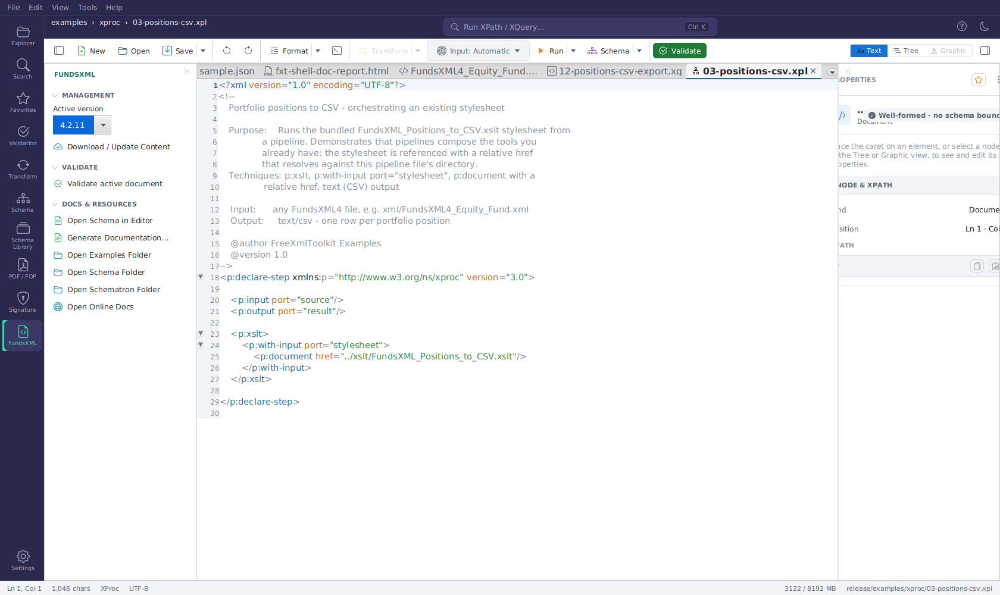
The panel offers three collapsible sections whose actions are labelled rows (icon + name):
- MANAGEMENT - Pick the Active version among the downloaded schema releases, or click Download / Update Content to force a manual refresh. A progress bar with stage text at the bottom tracks any running download - including the automatic background ones triggered at startup or by the daily update check.
- VALIDATE - Validate active document checks the open XML against the active FundsXML schema.
- DOCS & RESOURCES - Open Schema in Editor opens the active version's
FundsXML4.xsdas a normal editor tab (Text or Graphic/diagram view); Generate Documentation… produces browsable HTML docs; the Open … Folder rows show the cached examples, schema and Schematron files; Open Online Docs opens fundsxml.org.
See the FundsXML Extensions guide for the full feature description, cache locations and troubleshooting.
Schema Library Page¶
The Schema Library activity (icon: collection) manages namespace → schema mappings used to auto-bind XML, XSD and JSON documents that don't carry an explicit schema reference. Like Settings, it opens as a page - a tab named Schema Library in the main editor area, where all table columns fit. The page has three tabs - Mappings, Catalogs and Cache - each with clearly labelled action buttons, and a shared status line at the bottom. The side panel on the left lists the same three sections: click one to jump to that tab; the tab you are on is highlighted. Settings → Manage schema cache… opens the page directly on the Cache tab. See the Schema Library guide for the full reference, including the resolution order, the bundled standards list and troubleshooting.
Help Menu & About¶
Help is not a side panel - it lives in the Help menu of the menu bar. The ? button in the header bar and the F1 key open the same menu as a popup, right where you are working. It contains:
| Item | What it does |
|---|---|
| Documentation | Opens the online documentation |
| Keyboard Shortcuts | Lists all keyboard shortcuts |
| FundsXML Website / FundsXML Schema Docs | Only while the FundsXML extension is enabled |
| Report a Problem… | Sends an anonymous error report (only while error reporting is enabled, see below) |
| GitHub Repository | Opens the project page on GitHub |
| Sponsor this Project | Opens the GitHub Sponsors page |
| Check for Updates… | Looks for a newer version |
| About FreeXmlToolkit | Shows the version and build, licenses and links |
On macOS, Check for Updates… and About FreeXmlToolkit are in the FreeXmlToolkit application menu instead (see macOS). To find out which version you are running, open About FreeXmlToolkit.
-
Sponsor this Project opens the project's GitHub Sponsors page in your browser. The same link is in the About dialog, as a small banner on the Welcome page and under Settings → Support the Project.
-
Report a Problem… opens the Send Error Report dialog. Describe what you were doing, optionally leave an email address if you would like a reply, and click Send. The report is sent anonymously - no GitHub account is needed. The collapsible Preview of the data that will be sent shows exactly what is transmitted.
- The About dialog offers the same Report a problem… button next to Report an issue (which opens the GitHub Issues page).
- When an error dialog appears, it has a Send error report… button that opens the same dialog. Tick Include technical details to attach the anonymous error signature (exception type and code locations - never messages, paths or content).
These buttons are only shown while Send anonymous error reports is enabled in Settings. See Privacy & Anonymous Telemetry for details.
Settings Page¶
Settings open as a full page (a tab in the main editor area) rather than in the narrow left side panel. The options are presented as color-coded cards, sorted into seven groups.
Click the gear icon at the bottom of the activity bar (or press Ctrl+,): the Settings page opens as a tab in the main editor area, where there is room for all options.
Finding a setting - the side panel on the left lists the seven groups. Click a group to scroll the page to it; the group you are looking at is highlighted. Type into the search field at the top of the side panel to filter both the group list and the cards on the page down to the matching settings; if nothing matches, the page shows "No settings match the search.".
Saving - a save bar stays fixed at the bottom of the page:
- Unsaved changes appears as soon as you change an option that has not been saved yet.
- Save Settings stores and applies your changes.
- Reset to Defaults… asks for confirmation and then puts the default values into the controls. Nothing is stored until you click Save Settings, so you can still review or adjust the values first. The reset leaves your privacy / usage statistics choices, your user info, your templates, the file associations and the extension settings (FundsXML, Developer) unchanged.
- A few actions take effect immediately, without Save: switching the theme, registering or unregistering file associations, and creating, editing or deleting templates.
| Group | Cards and options |
|---|---|
| Appearance | Theme - switch between Light and Dark. Layout - Show toolbar button labels; Show activity bar labels; Use small icons; toolbar icon size (Small / Large); Show left side panel; Show Properties (inspector) panel. Rendering - JavaFX graphics pipeline: Auto / Hardware / Software (takes effect after restart), with the active pipeline and GPU status; see Rendering mode (hardware vs. software) below. Memory - Maximum memory for the application: Automatic (half of the installed memory) or a fixed limit (takes effect after restart); see Memory and large files below. |
| Editor | Editor - XML indent and JSON indent (spaces); Auto-format after loading; Pretty-print XSD on save; Pretty-print Schematron on load. Templates - a configurable templates directory, plus a New / Edit / Delete list of your own templates; see Managing your templates below. User Info - Name, Email and Company, used for example when generating documentation or signing. |
| Schemas & Validation | XSD - Auto-save (with an interval in minutes); Create backups on save (with the number of versions to keep, and an optional separate backup directory). Schema Library - Use the Schema Library to bind schemas automatically; shows the library file's location and a Manage schema cache… link; see Schema Library. Parser - XML parser engine (Xerces or Saxon); Allow XSLT extension functions. |
| Files & Cache | Temp & Cache - Use system temp folder or a custom temp folder; Clear Temp Folder to free disk space; Clear Cache Folder to delete cached files (downloaded schemas etc.); Manage schema cache…. File Associations - make FreeXmlToolkit the default application for XML, XSD, XSLT, Schematron and JSON files (per user, no admin rights); see File Associations. |
| Network & Security | HTTP Proxy - Use system proxy, or enter a proxy host and port. Security - Trust all certificates: accept any TLS certificate for HTTPS downloads (schemas, updates); use with care. Updates - Check for updates on startup. |
| Privacy | Usage Statistics - Enable usage tracking (local, anonymous feature-usage counters shown on the Welcome page) and Clear statistics. Below them: Send anonymous usage statistics and Send anonymous error reports (both on by default) and a What is sent? link that shows the exact data and your anonymous installation ID. See Privacy & Anonymous Telemetry. |
| Extensions | FundsXML - Enable FundsXML extensions adds the FundsXML activity to the activity bar. Developer - Record execution statistics collects duration, CPU and memory per XSLT/XQuery/validation run; view them in the Execution Statistics tool tab or via the "last run" item in the status bar. Support the Project - a Sponsor on GitHub link. |
Clearing the Cache Folder¶
The Clear Cache Folder button in the TEMP & CACHE section deletes the contents of the
application's local cache folder (~/.freeXmlToolkit/cache) - for example downloaded schemas,
including schemas fetched automatically for missing xs:import references. Clearing is safe:
such schemas are simply re-downloaded the next time they are needed. A confirmation dialog is
shown first, because the action cannot be undone. The cache folder itself is kept; only its
contents are removed.
Memory and large files¶
The MEMORY card sets how much memory the application may use, so that large files can be opened on machines with plenty of RAM.
The editor keeps a whole document in memory several times over (text, line model, highlighting, structured views), roughly 16 times the file size. The memory limit therefore decides how large a file can be:
| Maximum memory | Largest file that opens |
|---|---|
| 4 GB | about 256 MB |
| 8 GB | about 512 MB |
| 16 GB | about 1 GB |
- Automatic (default) uses half of the installed memory.
- A fixed value (2 GB up to the installed memory) applies from the next start; the application restarts itself once with that limit. The card shows the limit of the current session and the installed memory.
- If the chosen limit cannot be used, the application falls back to Automatic on its own.
- In a development run (
./gradlew run) the setting has no effect; the Gradle task sets the memory.
Opening a file of 50 MB or more asks for confirmation first, because editing it will be slow. A file that does not fit into the current memory limit is not opened; the message names the limit and points to this card.
Rendering mode (hardware vs. software)¶
The RENDERING card lets you choose how JavaFX draws the UI, per machine, without relying on a fixed JVM flag.
JavaFX can render either on the GPU (hardware-accelerated, faster) or purely in software. On machines with only an integrated GPU, hardware rendering can become unstable on very large diagrams/grids, while machines with a dedicated GPU benefit from it. The Mode dropdown controls this:
| Mode | Behaviour |
|---|---|
| Auto (default) | The application detects the graphics adapter at startup and picks hardware rendering on a dedicated GPU (and on macOS), or software rendering on integrated/unknown adapters. The detection result is cached. |
| Hardware | Always prefer GPU rendering (with an automatic software fallback if the GPU pipeline cannot start). Use this if Auto does not recognize your dedicated GPU. |
| Software | Always use software rendering. Use this if hardware rendering causes display glitches or crashes on your machine. |
Below the dropdown the card shows the current run's rendering status:
- Active pipeline - what JavaFX is actually using right now: Hardware — Direct3D, Hardware — OpenGL ES2, Hardware — Metal, or Software. This is read from the live graphics pipeline, so with Auto you can see at a glance whether you ended up on hardware or software rendering.
- Detected GPU - the graphics adapter(s) the application found on this machine.
Notes:
- A restart is required for a change to take effect - the graphics pipeline is chosen once when the application starts. The Active pipeline line always reflects the pipeline of the running session, not an unsaved dropdown change.
- An explicit
-Dprism.order=...JVM flag (command line) still overrides this setting, so power users can force a specific pipeline for troubleshooting. - Auto is intentionally conservative: any adapter it cannot confidently identify as a dedicated GPU falls back to software rendering. If your dedicated GPU is not detected, switch the mode to Hardware.
Managing your templates¶
The TEMPLATES card lets you keep your own starting templates, which then show up (filtered by file type) in the New File dialog.
- Templates directory - Use Browse… to point the application at the folder where your templates live. Leave it empty to use the default location. Changing the directory takes effect immediately, without restarting the application.
- Your templates - The card lists your own (non-built-in) templates. Use:
- New - Create a template. A dialog asks for its Name, Category, Description, File type, and Content.
- Edit - Change the selected template.
- Delete - Remove the selected template.
Each template is stored as a .template file in the templates directory. Once saved, your
templates appear in the New File dialog whenever their file type is selected. For the wider
template and XPath-snippet system, see Template Management.
Welcome / Dashboard¶
The welcome screen starts from tasks, not tools: a short list titled "What do you want to do?" takes you straight to the right panel. On a first start it stays uncluttered and offers a ready-made example to try.
When no document is open, the editor shows a welcome dashboard with:
- Quick cards - New File, Open File, Open Folder and From URL. While you have no recent files yet, a fifth card Open an Example is shown (see Trying the bundled example below).
- Stat cards - At-a-glance counts of your Recent files, Favorites, Templates, and Saved queries. They appear only once at least one of them is above zero, so a fresh installation does not show a row of zeros.
- Activity trend - The ACTIVITY (LAST 7 DAYS) chart appears only once you have used the application in the last seven days.
- Tips banner - A short hint banner with handy shortcuts (for example, drag a file onto the window to open it, or use Ctrl+F / Ctrl+H to find and replace).
- Recent files list - Click an entry to reopen it. While the list is still empty it shows a hint: files you open or create appear here - start with Open File or New File above.
-
What do you want to do? - A task list with six rows:
Task What happens Validate an XML file Asks for a file, opens it, shows the Validation panel and validates it as soon as it is loaded Run an XSLT transformation Asks for an XML file, opens it and shows the Transform panel, where you choose the stylesheet Query a document Asks for an XML file, opens it and opens the Query Console for XPath / XQuery Edit a schema Asks for an XSD file, opens it and shows the Schema panel Create a PDF Asks for an XML file, opens it and shows the PDF / FOP panel, where you pick the XSL-FO stylesheet Sign or verify a document Opens the Signature page directly (no file needed first) If you cancel the file chooser, nothing happens. The other activities (Explorer, Search, Favorites, Settings, …) are always one click away in the Activity Bar.
-
FUNDSXML quick access - When the optional FundsXML extension is enabled and its content is cached, an extra row with three cards appears: Open Example (opens a compact starter sample), Open Schema (opens
FundsXML4.xsdin the editor) and Browse Examples (opens the cached examples folder). The row shows up live as soon as the automatic background download finishes.
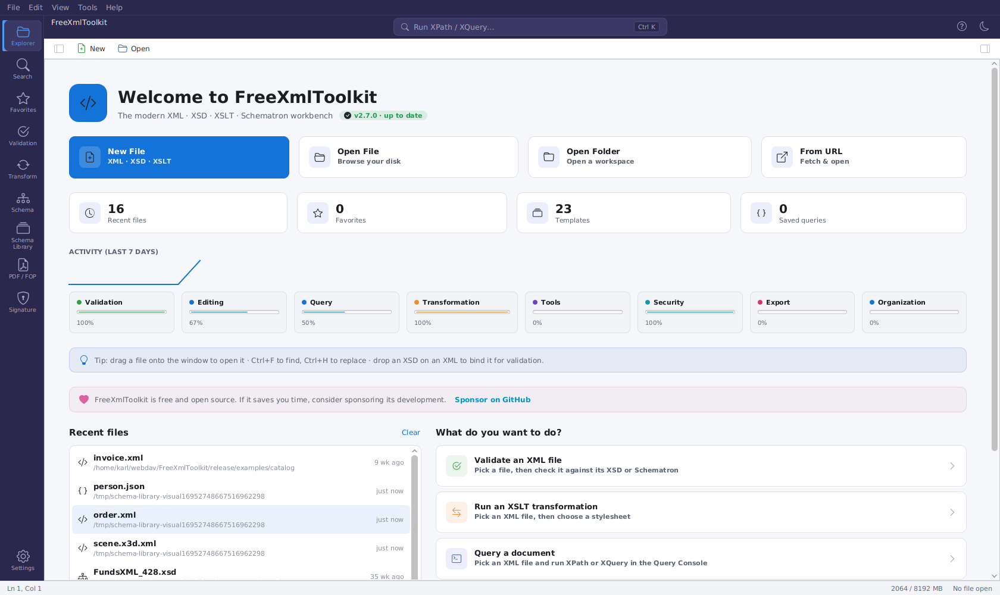
Trying the bundled example¶
Open an Example gives you something to experiment with right away. It copies a small
example set into ~/.freeXmlToolkit/examples/getting-started/ in your home folder and opens
order.xml:
order.xml- an order document that already points to its schema, so it is validated againstorder.xsdimmediately - no need to bind a schema yourself.order.xsd- the schema for the order.order-summary.xslt- a stylesheet that turns the order into an HTML summary.
If the files already exist there (for example because you edited them), they are kept and
not overwritten. A comment at the top of order.xml suggests what to try next:
- Press F8 to validate the document.
- Switch between the Tree and Graphic views.
- Choose Tools → Transform with XSLT… and pick
order-summary.xslt. - Open the Query Console (Ctrl+Shift+X) and run
sum(//item/(@quantity * @price))to get the order total.
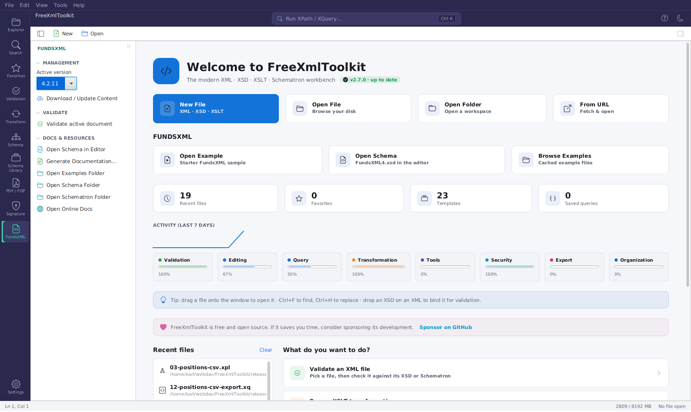
Tools that read the saved file¶
Some tools read the document from disk rather than from the editor: Generate Sample
XML… and Sample XML with Options… (Schema panel), Generate Documentation… and
signing a document (Signature). If the document has unsaved changes, they first ask
"Save changes to
- Save and Continue - saves the document, then runs the tool on the saved file.
- Use Saved Version - runs the tool on the file as it is on disk; your unsaved editor changes are not included.
- Cancel - does nothing.
Status Bar¶
The schema indicator shows the schema loading lifecycle, so you can tell exactly when IntelliSense (XML) or schema validation (JSON) becomes available.
The status bar at the bottom of the window includes (left to right):
- The caret position (
Ln 1, Col 1), the character count of the active document and its file type label (XML, XSD, XSLT, …). -
A schema indicator showing the schema-binding state of the active document — an XSD for XML-family documents, a JSON Schema for JSON documents:
State Meaning Detecting XSD… (hourglass) The linked schema is being detected and parsed in the background - IntelliSense is not available yet. XSD: name (green check) The schema is loaded - IntelliSense and schema validation are available. No XSD (clickable chip) The document references no schema - IntelliSense is limited. Click the chip to bind one. XSD 1.1 schema / XSD 1.0 schema The active document is an XSD schema itself. The version comes from vc:minVersiononxs:schema; without it the schema counts as XSD 1.0 (1.1 features still validate). Clicking it does nothing.XSD error (amber warning) The document references a schema that could not be found or parsed - IntelliSense is unavailable. Bind one manually to fix it. For JSON documents the same four states read "Detecting JSON Schema…", "JSON Schema: name", "No JSON Schema" and "JSON Schema error", and refer to schema validation (JSON has no schema-driven IntelliSense).
A loaded schema's label also shows how it was bound: a plain "XSD: name" when the document declared the location itself, "XSD: name (catalog)" when an XML catalog entry resolved it (bookmark icon), "XSD: name (library)" when a Schema Library mapping resolved it (collection icon), and "XSD: name (manual)" when you picked it by hand — the tooltip adds the resolved catalog target or matched namespace/root element plus the schema's absolute path.
Click the indicator (in any state except for an open XSD schema) to choose a schema file (
.xsd, or.jsonfor JSON documents) and bind it to the active document; for XML the binding drives both IntelliSense and schema validation, for JSON it drives validation. (The editor toolbar's Schema button - Set XSD Schema… - does the same.) Hovering shows a tooltip explaining what the binding currently provides.The indicator is also a drop target: drop an
.xsdfile (or a.jsonschema, for JSON documents) from your file manager onto it to bind the schema to the active document in one move - it glows green while a loadable file hovers over it and red for a wrong file type (which is rejected). - An encoding label (UTF-8). - A last run item (right-hand side) showing the last recorded XSLT/XQuery/validation run - it appears only while Record execution statistics (Settings → DEVELOPER) is on; click it to open the Execution Statistics tool tab. - A memory monitor showing the JVM heap usage as used / max MB. Click it to run garbage collection, which can free memory after working with large files. - The file path of the active document (or No file open).
Keyboard Shortcuts¶
| Shortcut | Action |
|---|---|
| Ctrl+N | New file (opens the guided New File dialog) |
| Ctrl+O | Open file |
| Ctrl+S | Save current tab |
| Ctrl+Shift+S | Save As (the Save ▾ menu also offers Save All) |
| Ctrl+W (Windows/Linux also Ctrl+F4) | Close the active tab (asks to save unsaved changes) |
| Ctrl+Tab / Ctrl+Shift+Tab | Next / previous tab |
| Ctrl+Q | Quit FreeXmlToolkit (Cmd+Q on macOS; Alt+F4 on Windows works as usual). With unsaved documents one dialog lists them and offers Save All / Don't Save / Cancel - the same when the window is closed |
| Ctrl+, | Open the Settings page |
| Ctrl+Z / Ctrl+Y (or Ctrl+Shift+Z) | Undo / Redo (works from the Text, Tree and Graphic views) |
| Ctrl+F | Find (in the active document) |
| Ctrl+H | Find and Replace (in the active document); Alt+Cmd+F on macOS |
| Ctrl+Shift+F | Find in Files - opens the Search panel, prefilled with the editor selection |
| Ctrl+Shift+H | Replace in Files - opens the Search panel with the replace row expanded |
| F8 | Validate the active document (same run as Tools → Validate, the toolbar's Validate button and the Validation panel's Run Validation) |
| F9 | Toggle the breakpoint on the caret line of a saved XSLT document (also Tools → Toggle Breakpoint) - see Debugging a Stylesheet |
| Shift+Alt+F | Format (pretty-print) the active document |
| Ctrl+D | Add the active document to favorites |
| Ctrl+Shift+D | Show the Favorites panel (press again to collapse the side panel) |
| Ctrl+Shift+X | Toggle Query Console (XPath/XQuery) |
| Ctrl+K | Open the Query Console and focus its input (same as the header search pill) |
| Ctrl+Enter | Run the active XPath/XQuery, XSLT or XProc document (Run Query / Run Transform / Run Pipeline) |
| F5 | Run the active XQuery / XPath / XSLT / XProc document (does nothing for other documents - use F8 to validate) |
| Shift+F5 | Debug with XSLT - the active XSLT document, the PDF / FOP panel's stylesheet, or the Transform panel's (asks for one if none is set) - see Debugging a Stylesheet |
| F5 / F7 / F8 / Shift+F8 | While the debugger is paused: Continue / Step Into / Step Over / Step Out (F5 and F8 keep their normal meaning otherwise) |
| F1 | Show the Help menu (as a popup, like the header's ? button) |
| F11 | Toggle full screen (also Ctrl+Cmd+F on macOS) |
| Ctrl+L | Show/hide the left side panel |
| Ctrl+Shift+P | Show/hide the Properties inspector |
| Ctrl+E | Spreadsheet Converter… (Excel / CSV ↔ XML) |
| Ctrl+T | Insert Template… (needs an open document) |
| Alt+Enter / Ctrl+. | Quick Fix - apply a Schematron Quick Fix on the caret line |
| Ctrl++ / Ctrl+- | Zoom in / out (Text view: font size; Graphic view: the grid in 10 % steps, 50-300 %) |
| Ctrl+0 | Reset the zoom to 100 % (Text view: font size, Graphic view: the grid) |
| Ctrl+Alt+X | Graphic view: copy the XPath / JSONPath of the selected node |
| Ctrl+Alt+C | Graphic view: copy the selected node as XML / JSON |
| Ctrl+Shift+C | Graphic view: copy the cell content |
| Ctrl+mouse wheel | Zoom (Text view: font size, Graphic view: the whole grid) |
On macOS use Cmd instead of Ctrl for the shortcuts above (see Menu Bar → macOS).
Changed shortcut
Ctrl+Shift+F no longer formats the document. Following the VS Code convention, it now opens Search (Find in Files), and Ctrl+Shift+H opens Replace in Files. Format Document moved to Shift+Alt+F - the toolbar's Format button works unchanged. The in-editor find/replace stays on Ctrl+F / Ctrl+H.
Search in all view modes: Pressing Ctrl+F opens an inline search bar with up/down chevron arrows for Find Previous / Find Next (Enter / Shift+Enter work too). The search works in the Text, Tree and Graphic views. In the structured views it searches the nodes themselves — for XSD schemas that is element/attribute/type names, documentation and appinfo, type references, fixed/default values, enumeration and facet values, and comments; for XML instances in the Graphic grid it is element names, attribute names, and values; for JSON documents (Tree and Graphic) it is keys and values. A match hidden inside a collapsed branch is revealed automatically (ancestors expand), selected, and scrolled into view; matches wrap around when you reach the end. Switching the view mode or tab while the bar is open re-targets the search to the active view. Replace is available in the Text view only — in Tree/Graphic views the replace toggle is disabled. In an HTML document's Preview, Ctrl+F searches the underlying markup text, not the rendered page. See XML Editor Features for details.
Compare & Merge¶
Tools → Compare with File… compares the active document (XML, XSD or any other text file) with another file, side by side, and lets you merge the differences.
- Choose Tools → Compare with File… and pick a file to compare against the current document.
- A new tab opens titled
Compare: <left> ↔ <right>with synchronized scrolling and live re-diff. - Changed lines are highlighted, with intra-line word-level coloring.
Merge controls let you reconcile the two files:
| Control | Shortcut | Action |
|---|---|---|
| Prev / Next | Alt+Up / Alt+Down | Jump between changed chunks |
| Per-chunk arrows | - | Apply a single change left→right or right→left |
| All → / All ← | - | Apply every change in one direction |
| Re-compute | - | Recompute the diff manually |
| Save Left / Save Right | - | Write a pane back to its file |
The diff recomputes automatically about 300 ms after you stop typing.
Jump to Validation Errors¶
Validation errors appear in the Properties / Validation sidebar (Ctrl+Shift+P). Double-click any error to jump straight to its location:
- In the Text view the caret moves to the exact line and column, with the offending text highlighted.
- In the Graphic view the matching element is selected, flashed, and scrolled into view.
- In split mode both views navigate at once.
Properties Inspector¶
Property editing works in all views - for XML files in Text, Tree, and Graphic, and for XSD files in the Text view as well as the Tree and Graphic views (see XSD Files below). For JSON files the inspector edits keys and values from the Tree and Graphic views (see JSON Files below).
The inspector is not fixed-width: drag the divider line between the editor and the inspector to make it wider (handy for long XPaths, attribute values, or documentation). The width is remembered across restarts - see Resizing and collapsing the side panels.
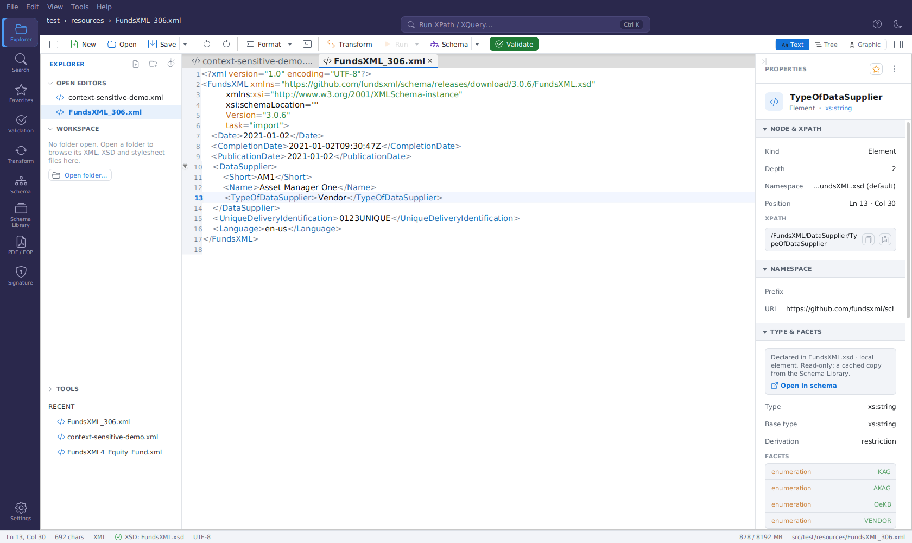
The Properties inspector for an XML element with a bound schema: node header with validation pill, NODE & XPATH, schema facts, and documentation with example values and valid children.While nothing is selected, the inspector shows a short hint instead of empty sections: "Open a document to see the properties of its nodes here." when no document is open, and "Select a node in the Tree or Graphic view to see and edit its properties." (or, in the Text view, a hint to place the caret on an element) when no node is selected.
Layout of the inspector¶
From top to bottom:
- Top bar - the title PROPERTIES, a star button and a ⋮ menu.
- The star adds the active file to Favorites (or removes it, when it is already a favorite). It is greyed out for a document that has never been saved.
- The ⋮ menu offers Copy XPath, Copy Node (XML), Expand All Sections and Collapse All Sections (the two copy actions are also buttons in NODE & XPATH).
- Node header - an icon for the kind of node, the node's name, a subtitle such as Element · xs:string (kind · type), and the validation pill: Valid, the number of errors, or Well-formed · no schema bound. Click the name to rename the node in place (only for nodes that have a name).
- Sections - collapsible sections with a full-width title bar. Each row shows the property name on the left and its value on the right.
Editing in place: editable values (type, minOccurs/maxOccurs, use, form, fixed, default, …) look like plain text until you point at them or click them - then the field frame, the drop-down arrow or the spinner buttons appear. Values without that hover effect are read-only.
The sections appear in this order. A section is shown only when it has content for the selected node - empty sections are left out:
| Section | Content |
|---|---|
| NODE & XPATH | Kind, Namespace, Depth (the nesting level; the root element is 0), Position Ln x · Col y (Text view only), and the XPath in a code box with the Copy XPath and Copy Node (XML) buttons |
| NAMESPACE | Edit the element's namespace prefix and URI (expanded by default) |
| TYPE & FACETS | Type, Base type, Derivation (restriction / extension / list / union) and the list of facets; for an XML element with a bound schema it starts with the declaration box (see Editing the bound schema from the XML document) |
| CARDINALITY & USE | minOccurs / maxOccurs, Use, and Order - the node's position in its parent compositor, e.g. 3 of 3 · sequence |
| VALUE & ATTRIBUTES | The element text and the list of attributes |
| CONTENT / PROCESSING INSTRUCTION / XML DECLARATION | The text of comments, CDATA sections, processing instructions and the XML declaration |
| DOCUMENTATION & REFS | Documentation, value check, example values, valid children and USED IN (see below) |
| ADVANCED, SCHEMA, CONSTRAINTS | Further schema-node properties (fixed/default, nillable, form, final, appinfo, identity constraints, assertions, …) |
The Namespace row in NODE & XPATH shows the URI, marked (default) for an unprefixed namespace, otherwise prefix → URI. An undeclared prefix shows as prefix → (unbound), an element without a namespace as (no namespace). For an XSD declaration the row shows the target namespace for global and qualified declarations, and (no namespace) for unqualified local ones.
Copying the XPath or the node¶
The NODE & XPATH section shows the selected node's XPath in a code box:
- Copy XPath - click the Copy XPath button next to the code box, or click the XPath
itself, to copy the positional XPath (e.g.
/root/item[2]) to the clipboard. - Copy Node (XML) - the second button next to the code box; copies the selected node's XML serialization.
Both actions are also in the ⋮ menu of the top bar. In the Text view they act on the element enclosing the caret; in the Tree/Graphic views they act on the selected node. For an XSD node selected in the Tree or Graphic view, Copy XPath copies the schema XPath and Copy Node copies the XSD source of that node; for JSON they copy the JSONPath and the JSON source.
Facets and attributes lists¶
Facets (in TYPE & FACETS) and attributes (in VALUE & ATTRIBUTES) are shown as framed lists that you edit directly:
- Click a value to edit it. Enter saves the change, Esc cancels it.
- For attributes, click the name to rename the attribute.
- Point at a row to show its trash icon; click it to delete the facet or attribute.
- Add a new entry with the row below the list (facet kind or attribute name, value, Add).
- Inherited facets (from a base type) are shown in italics and cannot be edited here.
- Long values wrap onto several lines instead of being cut off. The row's tooltip shows the full value, plus where it comes from (inherited from the referenced named type or defined by the schema).
- Keyboard: press Tab to move to a row; Enter edits its value and Delete removes the row.
XML Files¶
When an XML file is open, the Properties sidebar (Ctrl+Shift+P) shows the selected node and lets you edit it from whichever view you are in:
- Text view - Move the text caret into an element to select it. The inspector shows the element's name, namespace, attributes, and text as editable fields. Edits round-trip into the source as a minimal change that preserves your caret and scroll position. If the caret is not inside a well-formed element, the inspector falls back to a read-only name/XPath view. When you switch back to the Text view, the inspector shows the node at the caret again right away.
- Tree view - Click any node (element, text, comment, CDATA, or processing instruction) to edit its properties.
- Graphic view (the grid) - Select a row to edit its properties. The grid also handles structural editing (adding, deleting, and moving nodes) through its right-click context menu.
All three views share one in-memory model per open document, so your edits and Undo/Redo history are preserved when you switch between Text, Tree, and Graphic.
With a bound XSD schema, the inspector also shows what the schema says about the selected element: Type, Base type, Derivation (including the list item type or the union member types), the facets (including the enumeration values), minOccurs/maxOccurs/Use, Order, nillable, default and fixed values, Since … / Deprecated: … from the schema's documentation tags, the schema's appinfo, and in CONSTRAINTS the identity constraints, assertions and type alternatives. Where the declaration is editable you can change many of these right here - see Editing the bound schema from the XML document. The DOCUMENTATION & REFS section adds:
- the element's documentation from the schema, or "No documentation in the schema" when the schema has none;
- a value check - "Value matches the schema facets" in green, or an amber warning such as "Value should be one of: …" when the current text breaks a facet;
- EXAMPLE VALUES as chips - click one to set it as the element's text;
- VALID CHILDREN as chips - click one to add that child element (None for a container element that allows no children);
- USED IN - the containing element and its type.
Attributes with a bound schema: each attribute row shows its declared type as a small badge
(* marks a required attribute). Attributes the schema does not declare are marked
undeclared. For an attribute with enumerated values, the value editor is a drop-down. Below
the list, DECLARED, NOT SET shows chips such as + id * for declared attributes that are
missing - click one to add the attribute. Required ones are highlighted, and a default or fixed
value is filled in for you.
Editing the bound schema from the XML document¶
For an XML element with a bound XSD, TYPE & FACETS starts with a box such as Declared in order.xsd · local element · type AmountType and an Open in schema link. The link opens the XSD in the Graphic view, expanded along the element's path in the document (root element › … › element), and selects exactly this card - also when the schema has several local elements with the same name or the element sits in a named type used in several places.
When the declaration is editable, these inspector fields change the declaration in the XSD (not the XML): Type, minOccurs/maxOccurs, Nillable, Fixed, Default (in ADVANCED), the facets (add, edit, delete) and the documentation/appinfo. What happens:
- The XSD opens as a background tab - your XML document stays in front.
- The change is one undo step in the XSD tab, and the XSD tab shows as unsaved.
- Save the XSD. The XML document's schema facts (value check, example values, attribute information) are then reloaded.
Things to know:
- If the element uses a named simple type, its facets are the facets of that type. The list says so: "Facets of the named type T – a change applies to every element of that type".
- Before you change a type or a global declaration that is used in several places, the inspector asks once for confirmation (Change T).
- Some declarations are read-only, with a note:
- "Read-only: declared in an included or imported schema."
- "Read-only: a cached copy from the Schema Library." (also for read-only files)
XSD Files¶
When an XSD (schema) file is open, the Properties sidebar shows the selected schema node and lets you edit it from whichever view you are in. XSD files have the same three views - Text, Tree, and Graphic (for XSD, the Graphic view shows the schema diagram):
- Tree and Graphic views - Select a schema node to edit its name, type,
cardinality/occurrence, use, form, constraints, documentation, and facets.
Compositors (
xs:sequence,xs:choice,xs:all), group references andxs:anyshow editable minOccurs/maxOccurs and their Order in CARDINALITY & USE. A simple type shows its final value (read-only) in ADVANCED. When all facets of an element or attribute come from a named type, the add row is replaced by the hint "Facets come from T – click to edit them there."; clicking it selects that type. - Text view - Move the text caret into an XSD construct (such as an
xs:element,xs:complexType,xs:simpleType,xs:attribute, a compositor, or a facet) to select the matching schema node and edit the same properties you would in the Tree and Graphic views - without leaving the source editor. Edits round-trip into the schema text as a minimal change that preserves your caret and scroll position. If the caret is not inside a recognizable construct (for example inside anxs:annotation, a comment, or blank space), the pane falls back to a read-only caret/XPath view.
USED IN (in DOCUMENTATION & REFS) shows where a node is used:
- For a global type, element or group, it lists every place that references it. Click an entry to select the referring node in the Tree or Graphic view.
- For a local declaration, it shows the global component that contains it.
All three XSD views share one in-memory schema model, so your edits and Undo/Redo history are preserved when you switch between Text, Tree, and Graphic. Structural editing (adding, deleting, and moving nodes) remains a Tree/Graphic capability through the right-click context menu.
JSON Files¶
When a JSON file is open, select a node in the Tree or Graphic (grid) view and the Properties sidebar shows it:
- NODE & XPATH shows the node's JSONPath (e.g.
$.items[1]) instead of an XPath; click the value to copy it. - The key is editable for object properties - click the name in the node header to rename
the key (duplicate keys are refused). Array items (
[0],[1], …) and the root$have no key. - The Value field is editable for scalars (strings, numbers, booleans,
null); the type is kept, so a number must stay a number. Objects and arrays show a summary instead. - The node kind (object, array, string, …) is shown for information.
The inspector shares the document model with the grid, the tree and the text, so an edit here is one undo step (Ctrl+Z) and is written back into the text immediately. Structural editing (adding, deleting, moving or duplicating nodes, changing a value's type) is done in the grid's right-click context menu - see The Grid for JSON. In the Text view the inspector shows only the document type for JSON files.
Editor Toolbar Document Actions¶
Trigger per-document operations from the editor toolbar without leaving the editor or switching the left activity bar.
The editor toolbar includes a group of document actions that act on the active document. They are arranged as follows: Validate and Transform with XSLT… are their own buttons; Run Query / Run Transform / Run Pipeline are the Run ▾ split button (the primary click runs whichever of the three the active file type supports); Generate Documentation… and Type Editor… sit in the Schema ▾ split button's menu next to Set XSD Schema…. Each action is type-gated: it is enabled only when it applies to the active document's type, and disabled (greyed out) otherwise. Tools → Run and F5 follow the same rule: they only run XQuery, XPath, XSLT and XProc documents (Tools → Run is greyed out for other documents, and F5 does nothing). To validate, use F8, Tools → Validate, the toolbar's Validate button or the Validation panel's Run Validation - all four start the same validation run.
| Action | Applies to | What it does |
|---|---|---|
| Validate | XML, XSD, XSLT, Schematron, JSON | Validates the active document and lists any problems (or reports it is valid / well-formed). For an XML document this uses the bound XSD/Schematron if one is set; a JSON document uses its bound JSON Schema if one is set, otherwise it is checked for syntax only. |
| Transform with XSLT… | XML | Opens the Transform panel on the active XML document, asks you to pick a stylesheet if none is set, and runs it there - with the panel's parameters and output method; the result appears in the OUTPUT panel (including Save). Also available as Tools → Transform with XSLT…. |
| Generate Documentation… (Schema ▾ menu) | XSD | Lets you choose a format - HTML, PDF, or Word - and an output location, then generates the schema documentation there. |
| Type Editor… (Schema ▾ menu) | XSD | Lets you pick one of the schema's named types and opens it in a focused Type Editor tab. |
| Input (dropdown) | XQuery, XPath, XSLT, XProc | Selects the XML document the next run works on: Automatic (last active XML document), any open XML-family tab, or a file chosen from disk. Remembered per document. |
| Run Query (Run ▾) | XQuery, XPath | Runs the active query against the selected target and shows the result in the OUTPUT panel (Ctrl+Enter). |
| Run Transform (Run ▾) | XSLT | Runs the active stylesheet against the selected target, output format auto-detected from xsl:output (Ctrl+Enter). |
| Run Pipeline (Run ▾) | XProc | Runs the active pipeline with XML Calabash, the selected target feeding the source port (Ctrl+Enter). |
These actions reuse the same engines as the corresponding activity-bar panels - they are simply a faster way to reach them.
Tip
Generate Documentation works from the schema's last-saved version on disk so that relative
xs:include / xs:import references resolve correctly. Save the XSD first to document your
latest edits.
Query Console¶
Run XPath, XQuery and JSONPath against the open document right from the editor. This is the one place for queries - the Transform panel links here with its Open Query Console button.
The Query Console is a panel that opens along the bottom of the editor. Toggle it with the terminal icon in the editor toolbar or with Ctrl+Shift+X; Ctrl+K (or a click on the header search pill) opens it and focuses the query input. It runs against whichever document is currently active, so it is the fastest way to probe an XML or JSON file while you work.
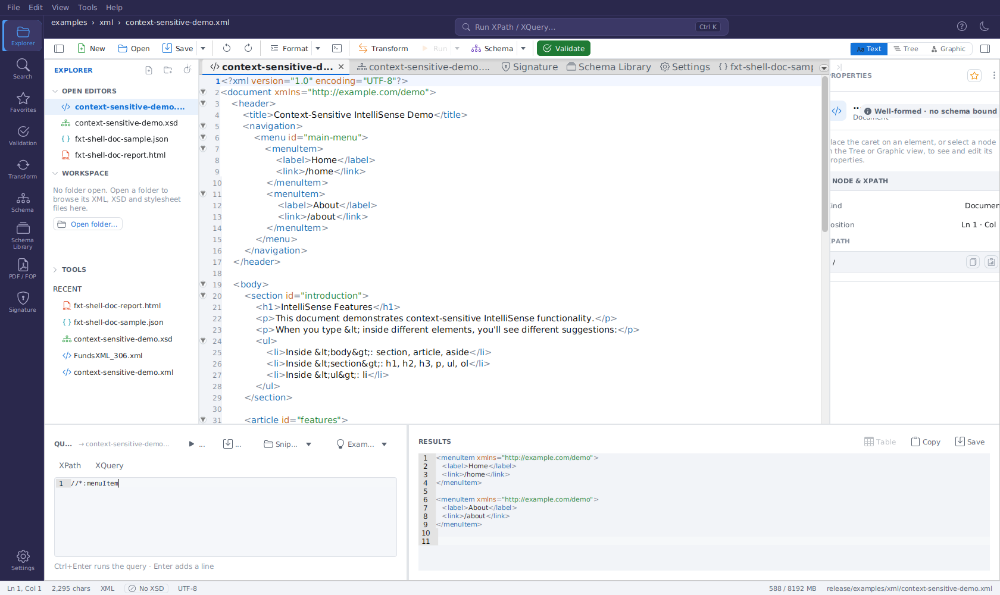
The Query Console with IntelliSense: typing/ in the XPath input opens the completion popup
(document elements and axes). The mode toggle and Run are on the left; on the right, the results
pane shows the previous run's XML result with syntax highlighting.
Layout¶
- Left - the query:
- An XPath / XQuery mode toggle. While a JSON document is active, the XPath toggle reads JSONPath.
- The query input with IntelliSense (autocomplete): suggestions pop up as you type after
/,//,@,[,(,$and::, or on demand with Ctrl+Space. It suggests element and attribute names from the active document, XPath/XQuery functions, axes, operators and (in XQuery mode) FLWOR keywords. Use ↑/↓ to navigate and Enter/Tab to accept. - The query is syntax-highlighted as you type: keywords, functions, axes, variables, strings, numbers and comments each get their own color.
- To run: press Ctrl+Enter in either mode (Enter inserts a new line, so queries can span several lines; a hint below the query says so). The Run button works in both modes.
- Run - Execute the query against the active document.
- Save - Save the current expression as a reusable snippet (see below).
- Snippets - A menu of your saved XPath and XQuery snippets; pick one to load it (the console switches to the matching mode automatically).
- Examples - Inserts a built-in XQuery example: Simple, FLWOR, HTML report or Data-quality check.
- Right - the results:
- A read-only, selectable results editor with line numbers showing the query result. XML results are syntax-highlighted (tags, attributes, values, comments), and JSON results (e.g. from JSONPath queries) get JSON highlighting; scalar results and messages stay plain.
- Copy - Copy the full result to the clipboard.
- Table - Shows the last XQuery result as a table in the OUTPUT panel (enabled after an XQuery run whose result can be shown as a table).
Like the text editor, every console area zooms with the mouse: hold Ctrl and scroll the mouse wheel over the query input or the results to change that area's font size (Ctrl+0 resets it).
Running a Query¶
- Open the console (Ctrl+K, the header search pill, the terminal icon, or Ctrl+Shift+X) - it opens focused on the query input.
- Choose XPath or XQuery with the mode toggle.
- Type your expression, then click Run (in XPath mode, Enter also runs).
- The result appears on the right. Use Copy to put it on the clipboard.
The console always runs against the active document. For an XML document it evaluates the expression directly; for a JSON document the toggle reads JSONPath and the input is evaluated as a JSONPath expression. When no document is open, Run is disabled and the results pane shows "No document open."
The map:, array: and math: function namespaces are
pre-declared in the console, so XPath 3.1 expressions using map:merge(),
array:size(), math:pow() etc. run directly - no namespace prolog needed.
Note
The Query Console is an additional, faster access point - it does not replace the Transform activity. For XSLT transformations, parameters, recent-stylesheet history, watch-and-rerun, and the OUTPUT panel's result table and HTML preview, use the Transform Panel.
Saving and Loading Snippets¶
Reusable XPath and XQuery expressions are saved as snippets:
- Save - Prompts for a name and stores the current expression. XPath snippets are saved as
.xpathfiles and XQuery snippets as.xqueryfiles. - Snippets - Lists every saved snippet, prefixed with its kind (XPath / XQuery). Selecting one loads it into the console and switches to the matching mode.
Snippets are kept in the shared query folder.
Saved snippets can be managed directly from the menu. Each snippet's submenu offers, next to Load into console and Open in editor:
- Overwrite with current query - Replaces the saved expression with the console's current
input of the snippet's kind (an
.xpathsnippet always takes the XPath input, an.xquerysnippet the XQuery input), after a confirmation. - Rename… - Prompts for a new name (pre-filled with the current one). Names already in use are refused.
- Delete… - Deletes the snippet file, after a confirmation.
The entries in the FUNDSXML section (see below) are read-only - they are re-registered from the FundsXML content cache on every start and therefore offer no management actions.
Looking for ready-made queries? The installation's examples/xpath/ folder contains
32 XPath 3.1 examples and examples/xquery/ contains 17 XQuery 3.1 scripts
(data-quality checks plus a reporting series producing CSV, ASCII tables/charts,
Markdown and JSON), all written for the FundsXML4 sample files in examples/xml/.
Paste them into the console, or copy the .xpath files into your query folder to have
them appear in the Snippets menu. See the README.md in each folder for details.
When the optional FundsXML extension is enabled, the Snippets menu also shows a FUNDSXML section with the XPath/XQuery example queries shipped with the FundsXML examples (for example fund-summary, top-holdings, look-through, aggregate-by-assettype). Selecting one loads it into the console and switches the XPath/XQuery mode to match. These entries come from the FundsXML content cache and are re-registered automatically on every start.
XPath / XQuery Autocomplete¶
The XPath/XQuery inputs of the Query Console offer context-aware
autocomplete in both the XPath and
XQuery input fields. Suggestions appear automatically after trigger characters (/, [, @, (,
$, ::) or on demand with Ctrl+Space. Depending on context it suggests element names, attribute
names, XPath axes, functions, and (in XQuery) variables. Navigate with the arrow keys and press
Enter or Tab to insert; Escape dismisses the popup. Functions and axes are inserted with
their parentheses / :: automatically.
Saving, Loading and Examples¶
Saved queries are the Query Console's Snippets menu, and its Examples menu inserts the built-in XQuery examples - see Saving and Loading Snippets.
Drag and Drop¶
Drag files from your file manager directly into the editor to open them. Multiple files can be dropped at once.
The file pickers and source rows across the shell are drop targets too:
- Drop an
.xsl/.xsltfile onto the Transform panel's STYLESHEET row to make it the current stylesheet. - Drop an
.xmlfile onto the Transform panel's INPUT row to make it the transform's input file. On both Transform panel rows a drop behaves like picking a favorite: the file is loaded into the editor and the transform runs automatically once both a stylesheet and an input are ready (while Run automatically is checked). - Drop a
.sch/.schematronfile onto the Validation panel's SCHEMATRON source row to make it the current Schematron (and bind it to the active document). Like every schema, stylesheet or input dropped on a panel row, it is also loaded into the editor - schemas behind the document they are bound to, inputs as the active tab. - Drop an
.xsdfile onto the Validation panel's XSD source row or onto the schema indicator in the status bar (shown for XML-family documents) to bind that schema to the active document. - Drop a
.jsonschema onto the Validation panel's JSON Schema source row or onto the schema indicator in the status bar (while a JSON document is active) to bind it for JSON validation. - Drop an
.xmlfile onto the PDF / FOP panel's XML input row, or an.xsl/.xsltfile onto its XSL-FO stylesheet row, to set the PDF rendering sources. - Drop a keystore file (
.jks,.keystore,.p12,.pfx) onto the Signature page's KEYSTORE row or Expert Mode's trust store row. - Drop an
.xsdfile anywhere on the Schema panel (Type Library) to open it as a document - unlike the targets above, this drop opens the file instead of binding or selecting it; the panel shows a dashed green/red border while you drag.
While you drag, the target shows green feedback when the file can be loaded there and red feedback when the extension does not match - a red drop is rejected and does not open the file in the editor. On the picker and source-row targets, a valid drop behaves exactly like choosing the file via Change or a favorite: it is recorded in the recent list (where the target has one) and shared between the Explorer bars and the panels. The feedback colors follow the light and dark theme.
Where the former tabs went¶
The Unified Shell consolidates what used to be separate sidebar tabs. The earlier standalone editors - XSD Editor, XSD Validation, JSON Editor, XSLT Viewer, Schematron, Schema Generator, Digital Signatures and FOP/PDF - have been retired and their functionality now lives in the shell:
| Former tab | Now in the shell |
|---|---|
| XSD Editor / Tools | Open an .xsd: Text/Tree/Graphic views + inspector; Schema activity (Type Library panel) for type editing, documentation, flatten and schema analysis |
| XSD Validation | Validation activity (single + batch, XSD & Schematron) |
| JSON Editor | Open a .json / .jsonc / .json5: Text / Tree / Graphic (grid) views + inspector; JSONPath via the Query Console; JSON Schema validation in the Validation activity |
| XSLT Viewer | Transform panel (set stylesheet, transform, preview, browser) |
| Schematron | Validation activity: check rules, templates, tester, builder, documentation, CSV/JSON export |
| Schema Generator | Editor toolbar Schema ▾ → Generate XSD from XML |
| Digital Signatures | Signature activity (sign, validate, trust validation, certificate creation) |
| FOP / PDF | FOP activity (XSL-FO → PDF + preview) |
| XSLT Developer | Transform panel + editor: run/live transform, parameters, and the OPTIONS & TOOLS section (batch, profile, trace, debugger) — see XSLT Developer |
| XML Editor | The shell's editor itself: every XML document opens with IntelliSense, Text/Tree/Graphic views and the Properties inspector |